Lesen und Bearbeiten
Die Leseansicht in LemmaLoom ist der mittlere Bereich des Hauptfensters, der den Text Ihres Dokuments enthält. Hier lesen Sie Ihre Dokumente, durchsuchen die Texte, wählen Wörter und Textstellen zum Kodieren oder Annotieren aus und bearbeiten den Text selbst. Wurde das Dokument als Audio- oder Videodatei importiert, zeigt die Leseansicht das Transkript mit der Wiedergabeleiste darüber, sodass Sie die Aufnahme hören können, während Sie das Transkript lesen.
Die Beispiele in diesem Kapitel beziehen sich auf das Beispielprojekt „Klimadebatte“ (siehe Das Beispielprojekt in Kapitel 1, Einführung). Die meisten stammen aus seinen Meinungsbeiträgen und Kolumnen, etwa „Uns läuft die Zeit davon“ oder „Netto-Null wird teuer“, während sich die Beispiele zu Aufnahmen auf das Dokument „Radiodebatte“ stützen. Sie können das Beispielprojekt über Ablage ▸ Importieren ▸ Beispielprojekt selbst laden; LemmaLoom importiert es als neues Projekt in der Sprache der Benutzeroberfläche.
Die Leseansicht
Wenn Sie in der Seitenleiste auf ein Dokument klicken, öffnet es sich in einem Tab der Leseansicht. Die Leseansicht besteht bei jedem Dokument aus denselben Teilen:
- Die Titelleiste liegt über der Textspalte, auf der Höhe der Fensterknöpfe. Ganz links zeigt sie den Titel LemmaLoom, ganz rechts die Werkzeuge der Leseansicht.
- Die Textspalte nimmt den größten Teil der Leseansicht ein und enthält den gesamten Text. Die Zeilen enden bei einer angenehmen Lesebreite.
- Die Randspalte links neben der Textspalte nummeriert Absätze und Sätze und zeigt alle Ihre Annotationen. Dazu gehören Kodierungen (Textstellen, die Sie kodiert haben), Memos, Lesezeichen und Verknüpfungen. Für jedes annotierte Element erscheint in der Randspalte das passende Symbol.
- Die Dokumentübersicht ganz rechts in der Leseansicht gibt Ihnen einen Überblick darüber, wo sich im Dokument welche Elemente befinden, bezogen auf den gerade sichtbaren Ausschnitt.
- Die Statusleiste unter der Textspalte zeigt Ihre Position im Dokument und die Gesamtlänge des Dokuments.
Zwischen Titelleiste und Text können außerdem die Suchleiste, eine Legende für die meisten aktivierten Lenses und die Wiedergabeleiste für Audio und Video erscheinen.
Wie die Abbildung unten zeigt, trägt „Netto-Null wird teuer“, ein skeptischer Meinungsbeitrag aus „Klimadebatte“, überwiegend Kodierungen mit dem Code „Kosten“. Einige Textstellen tragen andere Codes, etwa „Unsicherheit“, „Verantwortung“, „Dringlichkeit“ oder „Fristen“. Ein Satz über eine Rechnung, die „in die Hunderte Milliarden“ geht, trägt sowohl „Kosten“ als auch „Verantwortung“; deshalb steht neben ihm in der Randspalte eine zusammengefasste Annotation mit zwei Punkten.
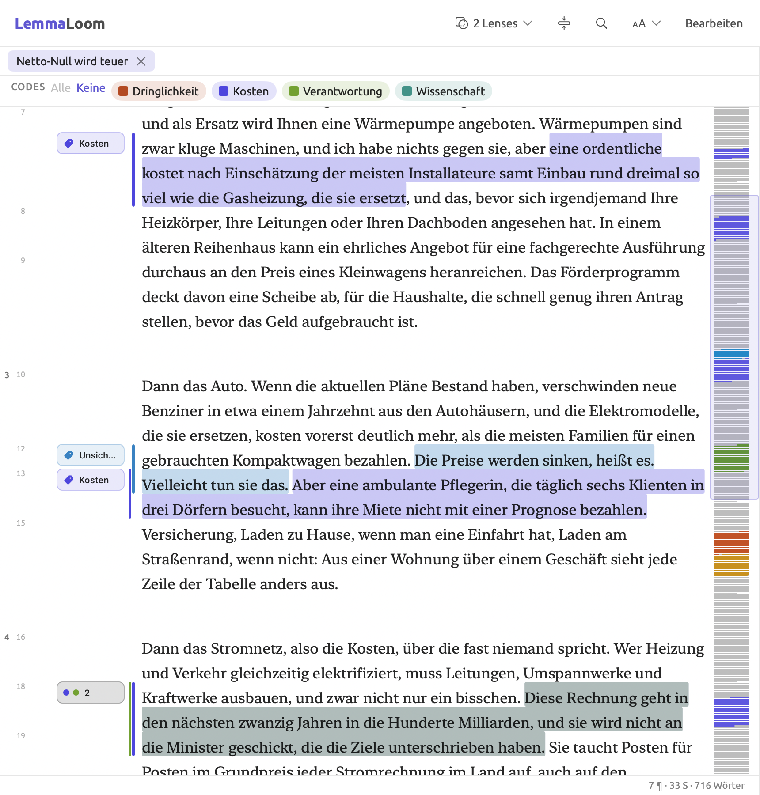
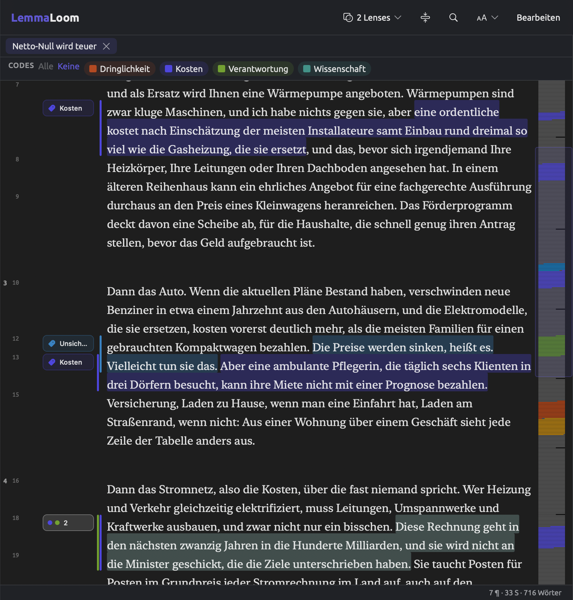
Die Titelleiste
Die Schaltflächen am rechten Ende der Titelleiste beziehen sich auf das Dokument, das Sie gerade ansehen. Sind zwei Dokumente nebeneinander geöffnet, gelten sie für den aktiven Bereich, also den, in den Sie zuletzt geklickt haben (siehe Zwei Dokumente nebeneinander lesen weiter unten in diesem Kapitel). Von links nach rechts haben die Schaltflächen diese Aufgaben:
- Das Lens-Menü zeigt den Namen der aktivierten Lens, bei mehreren aktivierten Lenses deren Anzahl oder Lens, wenn keine aktiviert ist. In einem neu geöffneten Dokument sind die Lenses Lesezeichen und Codes aktiviert, sodass das Menü 2 Lenses zeigt. Bis das Dokument indiziert ist, bleibt das Menü deaktiviert.
- Die Schaltfläche zum Einklappen mit dem Tooltip Nur die Sätze anzeigen, die eine Lens annotiert klappt das ganze Dokument auf die Sätze ein, die die aktivierten Lenses annotieren. Ein erneuter Klick hebt das Einklappen wieder auf. Die Schaltfläche erscheint nur, wenn eine Lens etwas zu annotieren hat (siehe Kapitel 6, Lenses).
- Im Dokument suchen, dargestellt durch die Lupe, blendet die Suchleiste ein.
- Schrift, Randspalte und Textgröße, dargestellt durch ein großes A neben einem kleinen, öffnet ein Menü mit Optionen für die Darstellung des Dokuments.
- Bearbeiten schaltet die Leseansicht in den Bearbeitungsmodus.
Im Bearbeitungsmodus zeigt die Titelleiste nur noch Abbrechen und Sichern.
Die Randspalte
Die Randspalte besteht aus zwei Teilen. Ganz links stehen die Nummern, in der linken Spalte die der Absätze und in der rechten die der Sätze. Die Sätze sind durch das ganze Dokument fortlaufend nummeriert. Beginnen mehrere Sätze in derselben Zeile, teilen sich ihre Nummern diese Zeile, durch Kommas getrennt, so viele, wie in die Spalte passen.
Um einen ganzen Absatz oder Satz auszuwählen, klicken Sie in der Randspalte auf seine Nummer. Sind beide Spalten zu sehen, wählt ein Klick in die linke Spalte Absätze aus und ein Klick in die rechte Sätze. Eine so ausgewählte Textstelle behandeln Sie wie jede andere Auswahl und können sie zum Beispiel kodieren. Ein Klick auf eine Nummer ist sogar der schnellste Weg, einen ganzen Absatz oder Satz zu kodieren (siehe Text auswählen weiter unten in diesem Kapitel).
Zwischen den Nummern und dem Text liegt der Randbereich, in dem alles erscheint, was Sie dem Dokument hinzugefügt haben. Kodierungen erscheinen hier, wenn die Lens Codes aktiviert ist, Lesezeichen entsprechend, wenn Lesezeichen aktiviert ist. Memos und Verknüpfungen erscheinen unabhängig von der aktuellen Lens.
- Neben jeder kodierten Textstelle steht ein schmaler Balken in der Farbe ihres Codes. Überlappende Kodierungen stehen nebeneinander. Alle Balken nach dem dritten teilen sich den dritten Platz. Wenn Sie den Mauszeiger auf einen Balken halten, wird die zugehörige Textstelle im Text hervorgehoben.
- Wo eine Kodierung, ein Memo, ein Lesezeichen oder eine Verknüpfung beginnt, steht eine kleine Annotation. Annotationen von Kodierungen enthalten den Namen des Codes, Annotationen von Memos den Anfang des Memos. Annotationen von Lesezeichen zeigen den Kommentar zum Lesezeichen, Annotationen von Verknüpfungen die Art der Verknüpfung.
- Wo Annotationen sich überlappen würden, werden sie zu einer grauen Annotation mit farbigen Punkten und einer Zahl zusammengefasst.
Ein Klick auf eine Annotation oder einen Balken wählt die Textstelle aus, zu der das Element gehört. Ein Klick auf die Annotation einer Verknüpfung führt dagegen zur Textstelle am anderen Ende der Verknüpfung und öffnet bei Bedarf das andere Dokument. Im Projekt „Klimadebatte“ führt zum Beispiel die Verknüpfung an einer Textstelle im Meinungsbeitrag „Netto-Null wird teuer“ direkt zur Rede „Das Versprechen der Bürgermeisterin“, auf die er antwortet. Wenn Sie den Mauszeiger auf eine Annotation halten, sehen Sie ein Memo, eine Verknüpfung oder einen langen Lesezeichenkommentar vollständig; das Popover einer Verknüpfung zeigt deren Angaben zusammen mit Zum anderen Ende springen. Wenn Sie auf eine zusammengefasste Annotation zeigen oder klicken, erscheinen alle ihre Einträge in einer Liste, und ein Klick auf einen Eintrag wählt dessen Textstelle aus oder springt bei einer Verknüpfung zum anderen Ende.
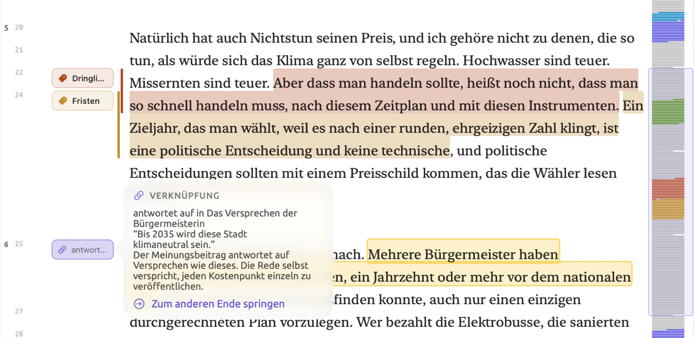
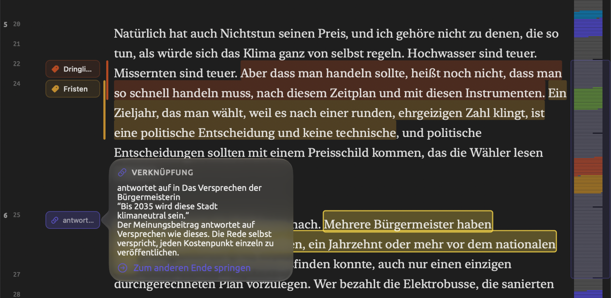
Die Dokumentübersicht
Die Dokumentübersicht am rechten Rand der Leseansicht ist eine Bildlaufleiste, die nach den aktivierten Lenses farbcodiert ist. Sie zeigt, wo im Dokument Sie sich gerade befinden und welche Teile des Dokuments die aktivierten Lenses annotieren, zum Beispiel mit Codes. Das ganze Dokument passt in den Streifen der Dokumentübersicht. Der Text selbst erscheint als blasse Linien, die von oben nach unten verlaufen, mit Lücken an den Absatzgrenzen. Kurze Absätze ganz in Großbuchstaben stehen für überschriftenartigen Text und erscheinen als dunklere Striche. Kodierte Abschnitte und die Wörter, die Ihre Lenses einfärben, erscheinen in ihren jeweiligen Farben.
Die Dokumentübersicht hat noch einige weitere Merkmale:
- Ihre aktuelle Position im Dokument ist durch ein umrandetes Rechteck gekennzeichnet;
- Ihre Lesezeichen erscheinen als kleine Quadrate ganz links;
- Suchtreffer erscheinen als kurze Striche ganz rechts;
- das ausgewählte Wort erscheint als Linie quer über die Dokumentübersicht.
Wenn Sie den Mauszeiger auf Abschnitte der Dokumentübersicht halten, sehen Sie eine Vorschau des Textes an dieser Stelle, nämlich den Absatz unter dem Mauszeiger mit seiner Nummer und die vier Absätze davor und danach. Sie können klicken, um im Text zu diesem Absatz zu springen (er wird kurz hervorgehoben), oder in der Dokumentübersicht nach oben und unten ziehen, um sich durch das Dokument zu bewegen.
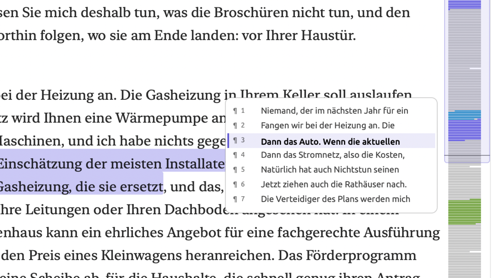
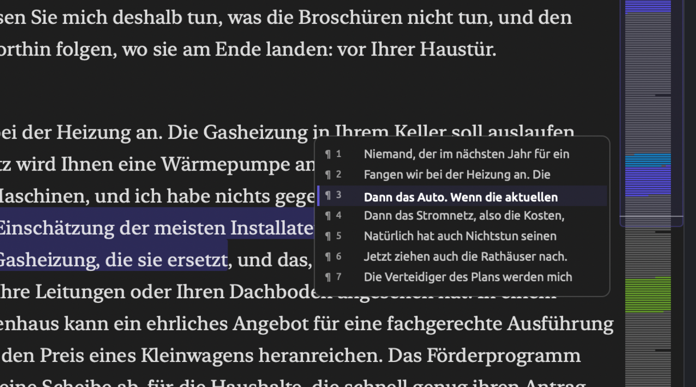
Die Statusleiste
Das linke Ende der Statusleiste zeigt, wo das ausgewählte Element liegt. Bei einem ausgewählten Wort sehen Sie den Absatz und den Satz, zu denen es gehört, und seine Position im Satz (¶ 4 · S 22 · T 6 steht zum Beispiel für den vierten Absatz, den zweiundzwanzigsten Satz und das sechste Token). Ein Token ist ein Wort oder ein Satzzeichen. Bei einer ausgewählten Textstelle sehen Sie Absatz und Satz, in denen sie beginnt und endet, sowie die Gesamtzahl ihrer Tokens.
Sobald die Indizierung abgeschlossen ist, zeigt das rechte Ende knappe Angaben zum Dokument, zum Beispiel 10 ¶ · 66 S · 1.084 Wörter bei „Uns läuft die Zeit davon“. Die Wortzahl beruht auf Tokens und schließt also Satzzeichen ein; welche Zahlen erscheinen, hängt von der Nummerierung der Randspalte ab. Bei Absätze sehen Sie die Zahl der Absätze und Wörter, bei Sätze die der Sätze und Wörter und bei Aus nur die der Wörter.
Solange die Indizierung nicht abgeschlossen ist oder nicht laufen kann, erscheint statt der Zahlen der aktuelle Stand der Indizierung (siehe In der Leseansicht in Kapitel 21, Analyse und Indizierung).
Folgende Angaben sind möglich:
- während der ersten Indizierung der Name des aktuellen Schritts und ein Prozentwert;
- der Name des aktiven Analysators, gefolgt von läuft, während ein Analysator das Dokument verarbeitet (eine zusätzliche Verarbeitung für ein bestimmtes Merkmal, etwa Verbindungen zwischen Sätzen);
- Keine Grammatikanalyse für, gefolgt vom Namen der Sprache, bei einer Sprache, für die es keine Grammatikanalyse gibt;
- Indizierung ist aus mit einem Link Jetzt indizieren, wenn Sie beim Import Für die Grammatikanalyse indizieren deaktiviert und die Indizierung damit ausgeschaltet haben;
- der Grund und ein Link Indizierung wiederholen, wenn bei der Indizierung ein Problem auftritt.
Bevor die Indizierung abgeschlossen ist
Sie können das Dokument lesen, sobald Sie es öffnen. Einige Funktionen der Leseansicht bleiben jedoch inaktiv, bis die Indizierung des Dokuments abgeschlossen ist:
- die Randspalte enthält nur Absatznummern, da die Sätze erst bei der Indizierung erkannt werden;
- Textstellen wählen Sie von Hand aus, indem Sie klicken und ziehen;
- das Lens-Menü ist deaktiviert;
- die Statusleiste zeigt den Fortschritt der Indizierung statt der Zahlen.
Wie lange die Indizierung dauert, hängt von der Größe des Dokuments und von der Ausstattung Ihres Computers ab. Die Grammatikanalyse von LemmaLoom unterstützt Englisch, Deutsch und Chinesisch. Dokumente in anderen Sprachen bleiben in dem oben beschriebenen Zustand, lassen sich aber weiterhin lesen, durchsuchen, kodieren und bearbeiten.
Was sich die Leseansicht merkt
Jedes Dokument merkt sich, wo Sie zuletzt gelesen haben, welche Lenses aktiviert waren und wie der Inspektor eingestellt war. Ein Projekt merkt sich die geöffneten Tabs, den aktiven Tab und welches Dokument in der geteilten Ansicht daneben geöffnet war. LemmaLoom behält all das auch beim Beenden, sodass sich die Leseansicht dort öffnet, wo Sie aufgehört haben.
Die Darstellung des Textes ändern
Sie können die Schriftart, die Textgröße, den Inhalt der Randspalte und das Layout des Textes einstellen. Ihre Einstellungen gelten für alle Dokumente in allen Projekten und bleiben erhalten, bis Sie sie ändern.
Diese Optionen können Sie an drei Stellen anpassen:
- im Menü Schrift, Randspalte und Textgröße in der Titelleiste, mit den Untermenüs Schrift, Randspalte und Layout sowie den Optionen Größerer Text, Kleinerer Text und Textgröße zurücksetzen;
- im Menü Darstellung, das nur die Textgröße betrifft;
- unter LemmaLoom ▸ Einstellungen … (⌘,) im Bereich Leseansicht, der außerdem die Darstellung der Auswahl festlegt und eine Vorschau zeigt.
Um Ihre Einstellungen und die Darstellung der Auswahl auf den Zustand beim ersten Start von LemmaLoom zurückzusetzen, klicken Sie oben im Bereich Leseansicht auf Alles auf Standard zurücksetzen.
Schrift
Die Leseansicht bietet elf Schriften, nämlich System Serif, System Sans, System Rounded, System Mono, Georgia, Palatino, Baskerville, Times New Roman, Helvetica Neue, Avenir Next und Menlo. Solange Sie nichts ändern, erscheint der Text in System Serif. Chinesischer Text erscheint unabhängig von der gewählten Schrift immer in der chinesischen Standardschrift des Mac.
Um die Schrift zu wechseln, klicken Sie in der Titelleiste auf Schrift, Randspalte und Textgröße und wählen unter Schrift eine aus. In den Einstellungen finden Sie die Schrift in der Zeile Schrift des Abschnitts Typografie.
Textgröße
Die Textgröße lässt sich in Schritten von 10 Prozent zwischen 70 und 200 Prozent einstellen. Die Standardgröße von 100 Prozent entspricht 17 Punkt.
- Mit Darstellung ▸ Größerer Text (⌘+) und Darstellung ▸ Kleinerer Text (⌘-) ändern Sie die Textgröße jeweils um einen Schritt.
- Um die Standardgröße wiederherzustellen, wählen Sie Darstellung ▸ Textgröße zurücksetzen (⌘0).
- In den Einstellungen können Sie stattdessen den Regler Textgröße unter Typografie verwenden. Daneben steht der Prozentwert, und die Schaltfläche zum Zurücksetzen gleich dahinter stellt wieder 100 Prozent ein.
Die Breite der Textspalte passt sich entsprechend an, sodass eine Zeile im Durchschnitt gleich viele Wörter fasst, und der Texteditor (siehe Den Text eines Dokuments bearbeiten weiter unten in diesem Kapitel) übernimmt dieselben Einstellungen.
Nummerierung in der Randspalte
Das Untermenü Randspalte, in den Einstellungen Randnummerierung genannt, legt fest, wie die Randspalte nummeriert wird:
| Einstellung | Die Randspalte zeigt |
|---|---|
| Beide | Absatz- und Satznummern (die Voreinstellung) |
| Absätze | nur Absatznummern |
| Sätze | nur Satznummern |
| Aus | keine Nummern |
Wenn Sie Textstellen nur nach Absätzen angeben, wirkt die Randspalte mit Absätze ruhiger. Auch bei Aus zeigt der Randbereich jedoch Annotationen wie Kodierungen, Memos, Lesezeichen und Verknüpfungen.
Layout
Das Untermenü Layout, in den Einstellungen unter Seite, enthält zwei Layouts, Einspaltig und Doppelseite.
Standardmäßig werden Dokumente im Layout Einspaltig angezeigt. Der Text steht in einer einzigen Spalte mit der Randspalte daneben.
Bei Doppelseite wird der Text auf Seiten verteilt, von denen jeweils zwei nebeneinander erscheinen wie in einem aufgeschlagenen Buch. Jede Seite ist so hoch wie die Leseansicht, und Sie scrollen von einem Seitenpaar zum nächsten nach unten. Jede Seite zeigt Absatz- und Satznummern wie im Layout Einspaltig, und auch die Dokumentübersicht funktioniert auf dieselbe Weise. Wenn Sie die Fenstergröße ändern, fließt der Text neu auf die Seiten. Das Layout Doppelseite eignet sich für größere Bildschirme und für eine erste Lektüre langer Dokumente, bevor Sie mit dem Kodieren beginnen.
Wenn Sie das Layout wechseln, bleibt Ihre aktuelle Position im Dokument erhalten.
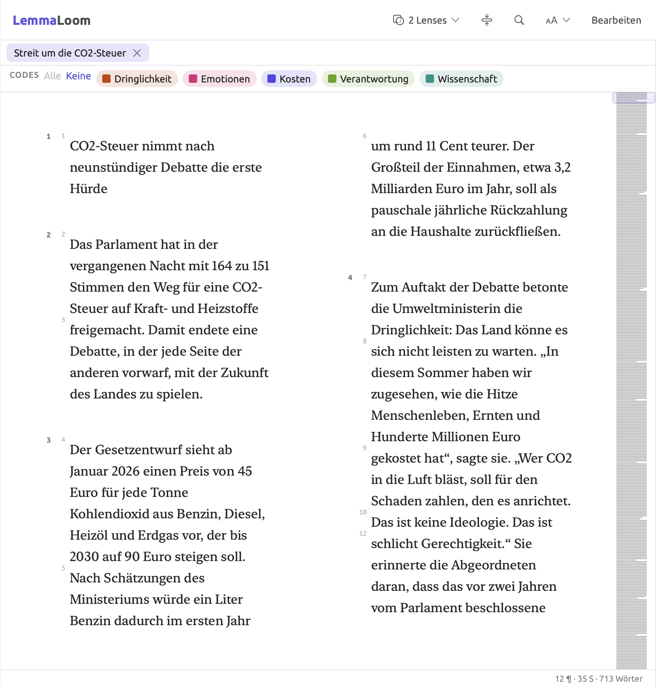
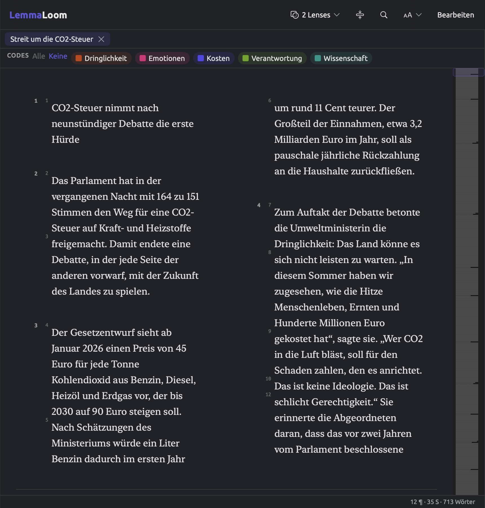
Farben der Leseansicht
Das Aussehen der Leseansicht, einschließlich Textfarbe und Hintergrund, richtet sich nach dem Thema, das Sie für die ganze Anwendung wählen. Sie wählen es mit der Einstellung Thema unter Erscheinungsbild im Bereich Allgemein der Einstellungen. Mehr zu den Themen finden Sie in Kapitel 24, Einstellungen und Darstellung. Für die Leseansicht wirken sich die Themen so aus:
| Thema | Leseansicht |
|---|---|
| System, Protanopie, Deuteranopie, Tritanopie | folgt dem hellen oder dunklen Erscheinungsbild von macOS |
| Hell, Hoher Kontrast | dunkler Text auf Weiß |
| Dunkel, Hoher Kontrast (Dunkel) | heller Text auf dunklem Hintergrund |
| Creme | dunkelbrauner Text auf warmem, gebrochen weißem Papier |
| Solarized Hell | graublauer Text auf blassem Cremeton |
| Solarized Dunkel | blassgrauer Text auf tiefem Blaugrün |
Wie eine Auswahl dargestellt wird
Wenn Sie ein Wort oder eine Textstelle auswählen, erscheinen die Auswahl und bei einem Wort auch seine grammatischen Beziehungen im Text. Wie sie aussehen, legen Sie in den Einstellungen im Abschnitt Auswahl des Bereichs Leseansicht fest. Unten im Bereich zeigt eine Vorschau, wie das Ergebnis aussieht, wenn Sie die Zeilen ändern.
| Zeile | Möglichkeiten | Was sie steuert |
|---|---|---|
| Ausgewählter Text | Volle Fläche, Hervorheben | Eine abgerundete Fläche in der Textfarbe mit den ausgewählten Wörtern in der Hintergrundfarbe oder eine leichte Tönung hinter den Wörtern. |
| Kopf und Dependenten | Bögen, Linien, Beschriftungen, Hervorheben, Aus | Wie die Leseansicht zeigt, von welchem Wort das ausgewählte Wort abhängt (seinem Kopf) und welche Wörter von ihm abhängen (seine Dependenten). |
| Umgebender Text | Abblenden, Leicht abblenden, Satz hervorheben, Aus | Ob der übrige Text um die Auswahl herum verblasst oder der Satz des ausgewählten Wortes getönt wird. |
| Audiowiedergabe | Spotlight, Volle Fläche, Hervorheben | Wie die gerade abgespielte Passage dargestellt wird, wenn die Leseansicht der Aufnahme folgt (siehe Dem Transkript folgen weiter unten in diesem Kapitel). |
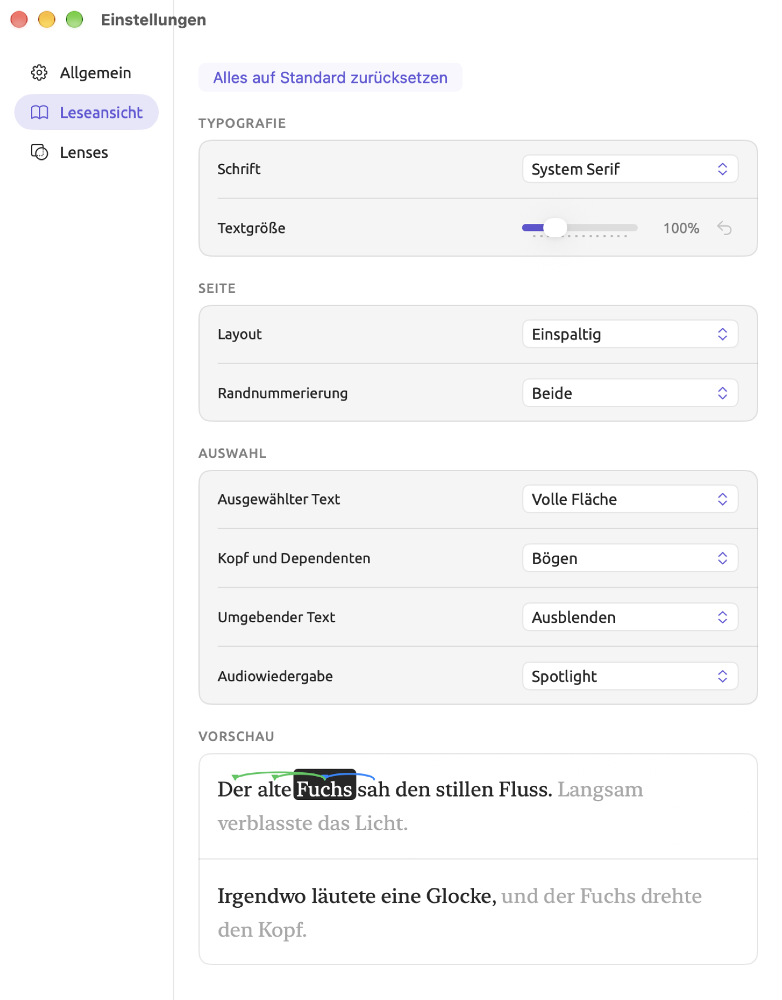
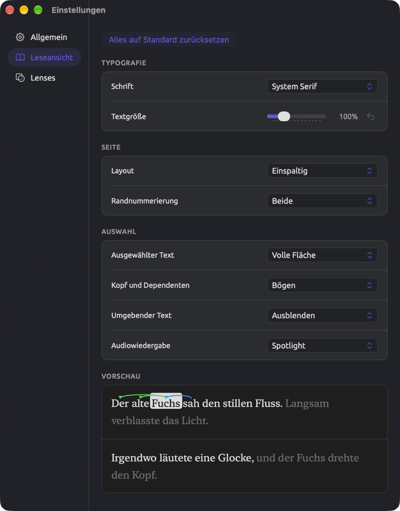
In jeder Zeile ist die erste Option die Voreinstellung.
In der Linguistik ist der Kopf eines Wortes das Wort, das es näher bestimmt oder von dem es abhängt. Im Beispiel ein nationales Programm, das Wohnungen dämmt bestimmt oder beschreibt nationales das Wort Programm; Programm ist also der Kopf, und nationales ist einer seiner Dependenten.
Mit Abblenden bleiben Sie auf Ihren Satz konzentriert. Soll der Kontext beim Kodieren gut sichtbar bleiben, wählen Sie Leicht abblenden oder Satz hervorheben.
Text suchen
Mit der Suchleiste durchsuchen Sie das geöffnete Dokument nach den Zeichen, die Sie eingeben, und gelangen direkt zu den Treffern. Wenn Sie alle Formen eines Wortes finden möchten, etwa zahlen und gezahlt, oder mehrere Dokumente gleichzeitig durchsuchen wollen, verwenden Sie statt der Suchleiste eine Abfrage. Abfragen berücksichtigen Wortformen und den grammatischen Zusammenhang (siehe Kapitel 15, Eine Abfrage erstellen).
Die Abbildung zeigt die Kolumne „Die Modelle liegen daneben“ eines skeptischen Autors, der „früher selbst beruflich Modelle gebaut“ hat. Bei der Suche nach Modell findet LemmaLoom zwölf Treffer, darunter Modelle und Modellierer, und die Dokumentübersicht zeigt, wie sie sich verteilen.
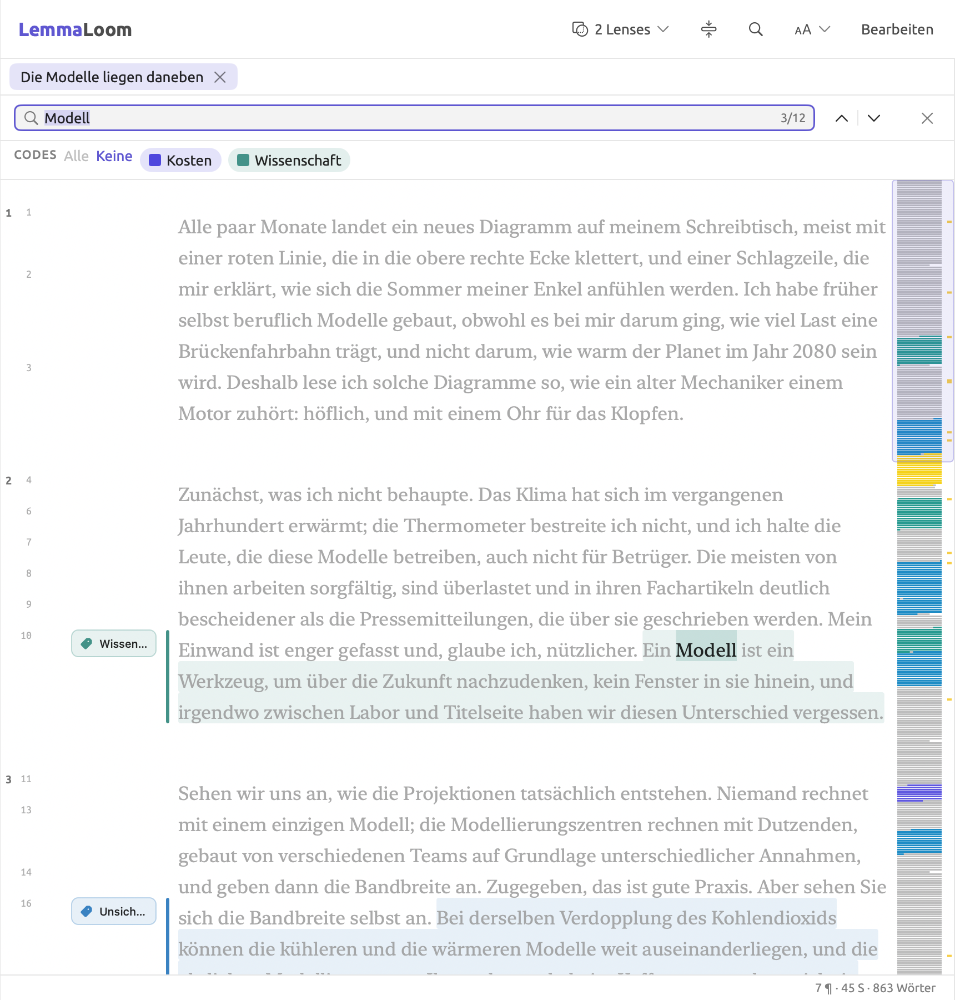
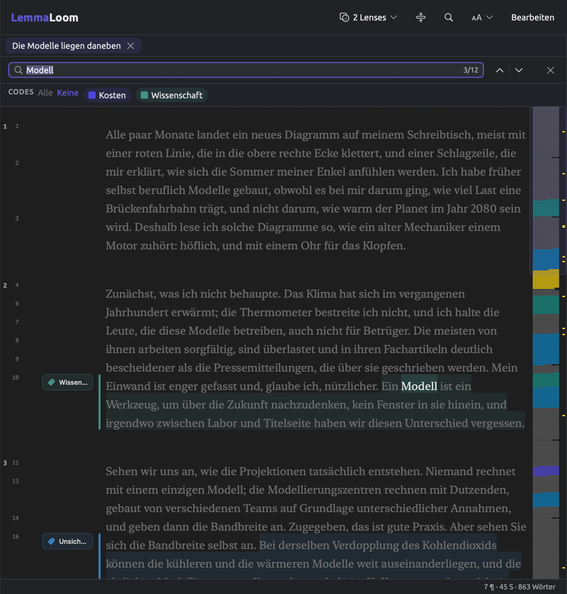
So suchen Sie Text in einem Dokument:
- Wählen Sie Bearbeiten ▸ Suchen (⌘F) oder klicken Sie in der Titelleiste auf Im Dokument suchen (die Lupe). Die Suchleiste öffnet sich über dem Text, mit der Einfügemarke im Suchfeld.
- Geben Sie ein, wonach Sie suchen. LemmaLoom sucht schon während der Eingabe und scrollt zum ersten Treffer.
- Drücken Sie den Zeilenschalter oder ⌘G oder klicken Sie auf den Pfeil nach unten, um zum nächsten Treffer zu gehen. Mit ⇧⌘G oder dem Pfeil nach oben gehen Sie zum vorherigen zurück. Nach dem letzten Treffer beginnt die Suche wieder beim ersten, und vom ersten Treffer aus führt ⇧⌘G zum letzten.
- Um die Suchleiste zu schließen, drücken Sie die Esc-Taste, klicken auf das × an ihrem rechten Ende oder wählen erneut Bearbeiten ▸ Suchen (⌘F).
Der Zähler im Suchfeld zeigt, beim wievielten Treffer Sie gerade sind und wie viele Treffer es insgesamt gibt; 3/12 bedeutet also den dritten von zwölf Treffern. Gibt es keine Treffer, erscheint Nicht gefunden.
Die Leseansicht hebt den aktuellen Treffer im Text automatisch hervor. Steht Umgebender Text auf Abblenden oder Leicht abblenden, wird alles um den Treffer herum blasser; bei Satz hervorheben oder Aus werden die Treffer getönt. Alle Treffer erscheinen als kurze Striche am rechten Rand der Dokumentübersicht der Leseansicht.
Die Suche findet Treffer nach diesen Regeln:
- Groß- und Kleinschreibung sowie Akzente werden ignoriert,
modellfindet also Modell undcafefindet Café; - Leerzeichen vor und nach Ihrer Eingabe werden ignoriert;
- Treffer können innerhalb längerer Wörter liegen,
modellfindet also auch Modelle oder Modellierer. Um eine Wortfolge als Ganzes zu finden, geben Sie sie mit ihren Leerzeichen ein, zum Beispielschlimmsten Fall; - chinesischer Text wird auf dieselbe Weise durchsucht, als Folge von Schriftzeichen.
In LemmaLoom hat jedes Dokument eine eigene Suchleiste. Wenn Sie sie schließen, wird Ihre Suche zurückgesetzt. Ist die Leseansicht auf die annotierten Sätze eines Dokuments eingeklappt, klappt sie beim Öffnen der Suchleiste wieder aus, sodass Sie den ganzen Text des Dokuments durchsuchen können. Wenn Sie die Leseansicht einklappen, schließt sich die Suchleiste automatisch wieder. Während Sie ein Dokument bearbeiten, ist Suchen deaktiviert.
Text auswählen
Sobald Sie Textstellen in der Leseansicht ausgewählt haben, können Sie sie kodieren, mit Lesezeichen oder Memos versehen, miteinander verknüpfen oder einem Wörterbuch hinzufügen. Eine Textstelle kann aus einem Wort oder aus einem längeren Textabschnitt bestehen.
Ein Wort auswählen
Klicken Sie auf ein Wort, um es auszuwählen. Ein erneuter Klick auf dasselbe Wort oder die Esc-Taste hebt die Auswahl auf. Einzelne Wörter lassen sich auswählen, sobald das Dokument indiziert ist.
Wenn Sie ein Wort auswählen, sehen Sie auch, wie es mit dem Rest seines Satzes verbunden ist. Standardmäßig zeigen Bögen die Verbindung des ausgewählten Wortes zu seinem Kopf und seinen Dependenten. Außerdem verblasst alles außerhalb des Satzes, zu dem das Wort gehört. Ist der Inspektor eingeblendet, zeigt sein Tab Grammatik Einzelheiten zum ausgewählten Wort (siehe Kapitel 11, Der Grammatik-Inspektor). Wie die Auswahl aussieht und wie ihre Verbindungen dargestellt werden, legen Sie in den Einstellungen fest (siehe Wie eine Auswahl dargestellt wird weiter oben).
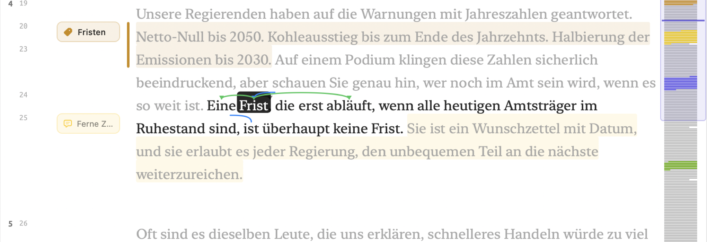
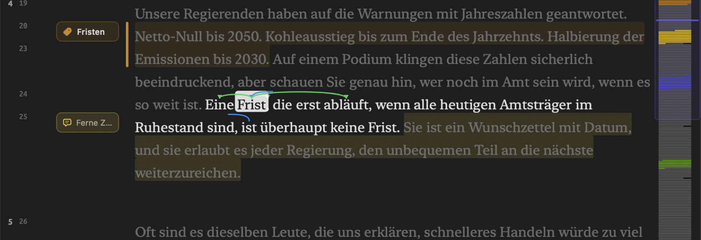
Eine Textstelle auswählen
Um eine Textstelle auszuwählen, klicken Sie an ihren Anfang und ziehen bis zu ihrem Ende. Leerzeichen an beiden Enden werden weggelassen. Sie können auch auf die Nummern in der Randspalte klicken, um Absätze oder Sätze direkt auszuwählen, oder auf Annotationen und Balken im Randbereich, um die zugehörigen Textstellen auszuwählen.
Wie viel Sie auswählen, hängt von Ihren Anforderungen ab. Es empfiehlt sich aber, so viel Text auszuwählen, dass die Auswahl für sich allein verständlich ist, denn kodierte Textstellen werden später einzeln und ohne ihren Kontext gelesen. In „Klimadebatte“ umfassen die meisten kodierten Textstellen einen oder zwei ganze Sätze.
Den ausgewählten Text kopieren Sie mit Bearbeiten ▸ Kopieren (⌘C).
Die Auswahlleiste
Sobald Sie im Dokument ein Wort oder eine Textstelle ausgewählt haben, erscheint unten in der Leseansicht eine Leiste. Sie zeigt zuerst die ersten Wörter Ihrer Auswahl und dann die Aktionen, die Sie darauf anwenden können.
Die Abbildung zeigt einen ausgewählten Satz aus „Uns läuft die Zeit davon“, der wie im Schnellstart mit „Fristen“ kodiert werden soll. Die Textstelle davor ist bereits mit „Fristen“ kodiert. Neben dem folgenden Satz steht die Annotation eines Memos, das mit „Ferne Zielmarken werden als Ausweichen gelesen“ beginnt.
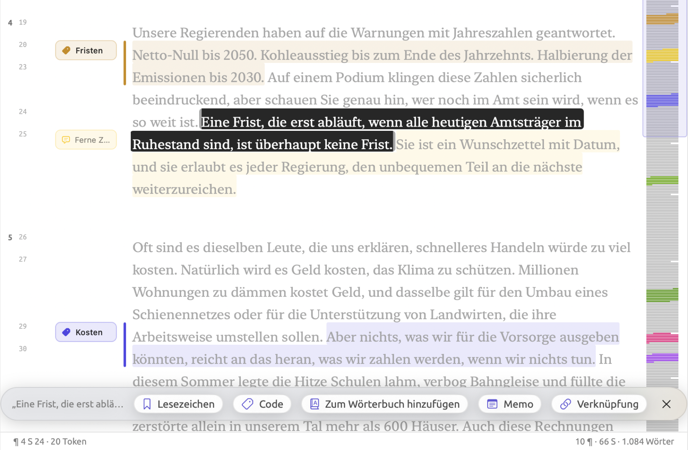
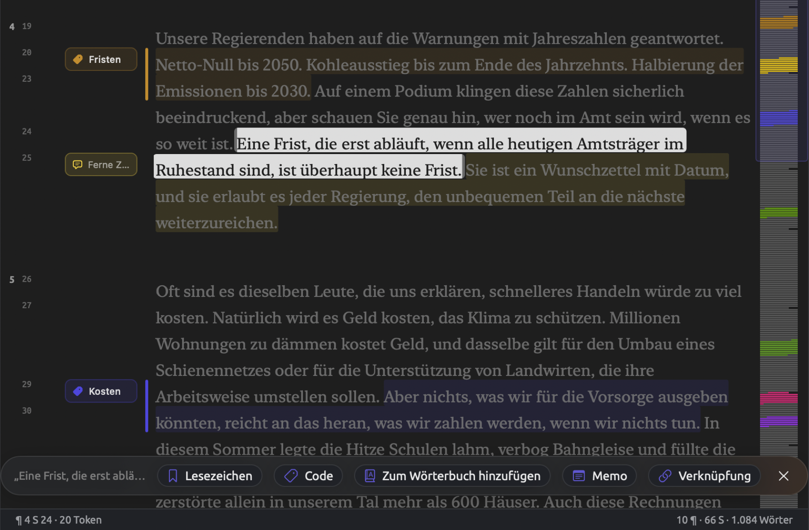
Die Auswahlleiste bietet Folgendes:
- Lesezeichen setzt ein Lesezeichen an der aktuellen Textstelle, auf Wunsch mit einem Kommentar, etwa „Rhetorische Frage am Übergang zum Schlussappell“ bei einem Lesezeichen in „Uns läuft die Zeit davon“. Liegt die Auswahl auf einem Lesezeichen, wird die Schaltfläche jedoch zu Lesezeichen entfernen.
- Code öffnet die Code-Palette. Wählen Sie einen Code aus, um die Textstelle damit zu kodieren, oder tippen Sie in das Feld, um einen Code in der Liste zu suchen (der Zeilenschalter vergibt den hervorgehobenen Code; das ist der erste Treffer, bis Sie mit ↑ und ↓ einen anderen ansteuern). Wählen Sie einen Code mit Häkchen (einen, den die Textstelle bereits trägt), um ihn zu entfernen. Nach allen Codes der Liste legt die Option Code „…“ hinzufügen einen neuen Code mit dem eingegebenen Namen an, sofern noch kein Code so heißt. Zuletzt folgt die Option In vivo „…“, die die Auswahl mit einem neuen Code kodiert, der nach dem ausgewählten Text benannt ist.
- Zum Wörterbuch hinzufügen fügt den ausgewählten Text in eine Kategorie eines Wörterbuchs des Projekts ein (siehe Kapitel 19, Wörterbücher). Die Schaltfläche erscheint nur, wenn das Projekt mindestens ein Wörterbuch enthält.
- Memo legt ein Memo zur ausgewählten Textstelle an.
- Verknüpfung beginnt eine Verknüpfung zwischen zwei Textstellen. Bevor Sie auf Verknüpfung abschließen klicken, wählen Sie die zweite Textstelle aus, in diesem oder einem anderen Dokument. In der Zwischenzeit erscheint eine durchgestrichene Verknüpfungsschaltfläche, Ausstehende Verknüpfung abbrechen, mit der Sie die unfertige Verknüpfung löschen.
- Ein Klick auf das × am Ende der Auswahlleiste hebt die aktuelle Auswahl auf, wie die Esc-Taste.
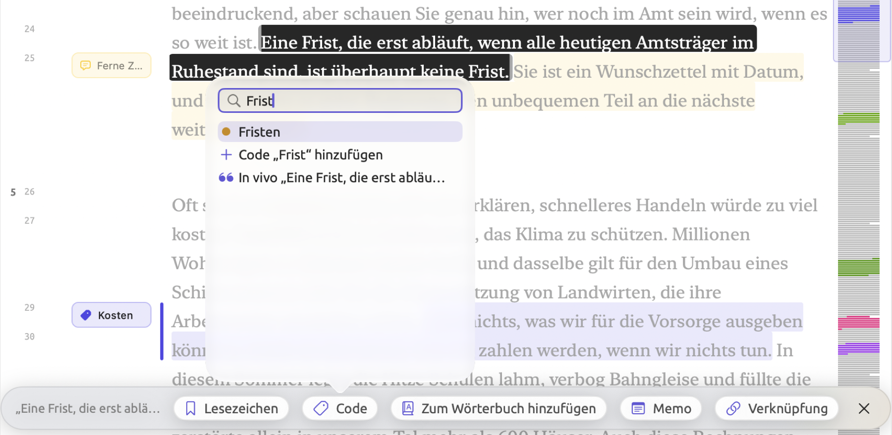
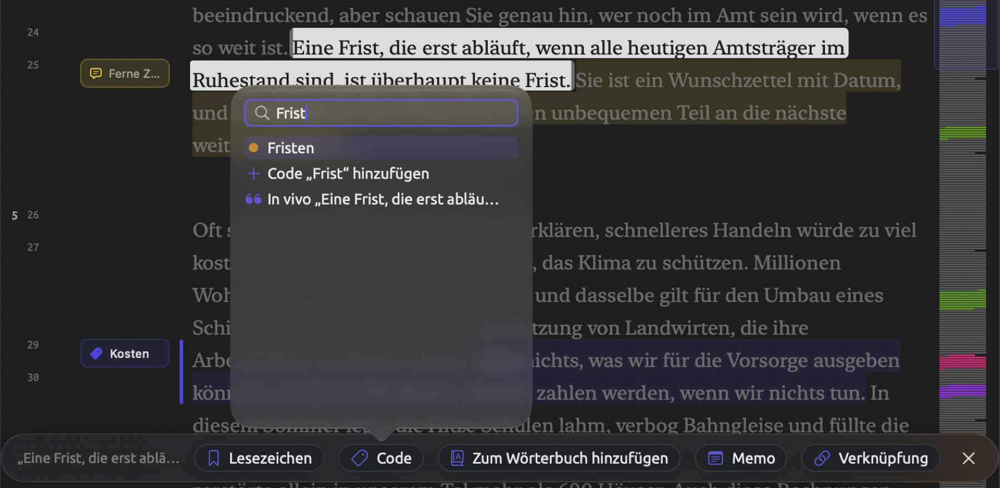


Wann sich Kodierungen, Memos, Lesezeichen oder Verknüpfungen eignen, erfahren Sie in Kapitel 7, Kodieren.
Das Menü Dokument enthält Befehle für dieselben Aktionen, mit diesen Kurzbefehlen:
| Befehl | Kurzbefehl |
|---|---|
| Dokument ▸ Code | ⇧⌘C |
| Dokument ▸ In-vivo-Code | ⇧⌘V |
| Dokument ▸ Memo | ⇧⌘M |
| Dokument ▸ Lesezeichen (oder Lesezeichen entfernen) | ⇧⌘B |
| Dokument ▸ Verknüpfung (oder Verknüpfung abschließen) | ⇧⌘L |
| Dokument ▸ Verknüpfung abbrechen | ⌥⇧⌘L |
Den Text eines Dokuments bearbeiten
Den Text jedes Dokuments können Sie bearbeiten. Das Bearbeiten in LemmaLoom dient dazu, kleinere Fehler zu korrigieren, etwa Tippfehler in einem Artikel, Fehler beim Auslesen von Text aus einem PDF, falsch transkribierte Wörter in einem Transkript oder holprige Wendungen in einer maschinellen Übersetzung. Beim Bearbeiten hält LemmaLoom Kodierungen, Memos, Verknüpfungen und Lesezeichen bei den Textstücken, zu denen sie gehören. Nach dem Sichern wird das ganze Dokument neu indiziert.
Der Editor zeigt den Text Ihres Dokuments als reinen Text in einer Schrift mit fester Zeichenbreite. Um größere Teile des Textes zu ändern, bearbeiten Sie ihn zuerst an anderer Stelle und fügen ihn dann wieder in den Editor ein. Sie können auch die geänderte Datei des Dokuments importieren und von vorn kodieren. Prüfen Sie nach dem Einfügen unbedingt Ihre Annotationen, denn sie können sich nun auf falschen Text beziehen (siehe den Hinweis am Ende von Wie Annotationen Änderungen folgen weiter unten).
Bearbeiten und sichern
Am ehesten werden Sie Texte bearbeiten wollen, die LemmaLoom selbst erzeugt hat, also ein Transkript, eine Übersetzung oder den Text, den LemmaLoom aus einem PDF ausgelesen hat. In „Klimadebatte“ sind das „Hitzebericht 2024“, das Transkript von „Radiodebatte“ und „Uns läuft die Zeit davon (Englisch)“. Die Abbildung unten zeigt einen der skeptischen Meinungsbeiträge, „Netto-Null wird teuer“, im Editor, mit Leerzeilen zwischen den Absätzen und nur den Schaltflächen Abbrechen und Sichern in der Titelleiste.
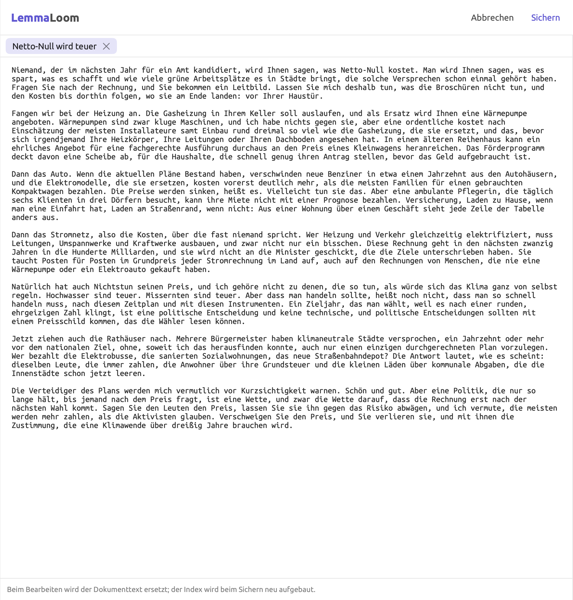
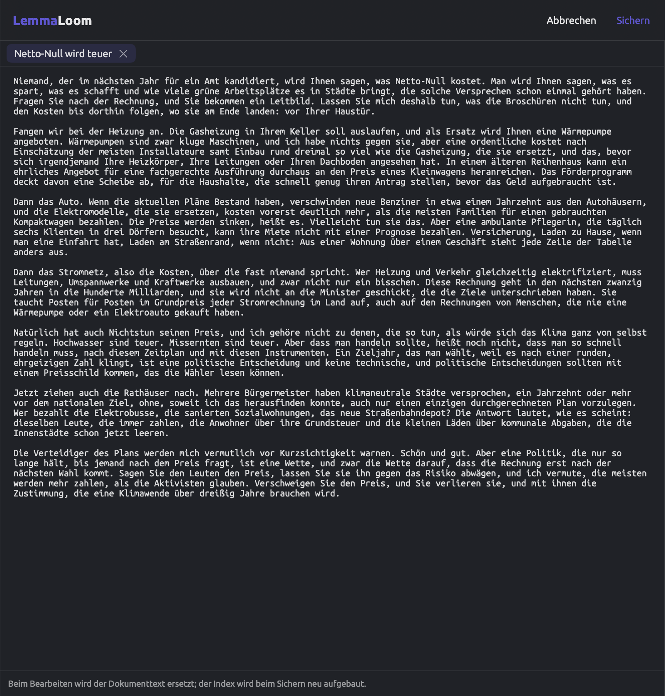
So ändern Sie den Text eines Dokuments:
- Öffnen Sie das Dokument.
- Klicken Sie am rechten Ende der Titelleiste auf Bearbeiten oder wählen Sie Dokument ▸ Bearbeiten (⇧⌘E). Die Leseansicht wird zu einem einfachen Texteditor mit einer Schrift fester Zeichenbreite. Lenses, Randspalte, Dokumentübersicht und Statusleiste sind während der Bearbeitung ausgeblendet, und unter dem Text erscheint die Zeile Beim Bearbeiten wird der Dokumenttext ersetzt; der Index wird beim Sichern neu aufgebaut.
- Nehmen Sie Ihre Änderungen vor. Während Sie tippen, macht ⌘Z Ihre letzten Änderungen im Editor rückgängig.
- Klicken Sie in der Titelleiste auf Sichern oder wählen Sie Dokument ▸ Sichern (⌘↩).
Trennen Sie Absätze durch eine Leerzeile. Ohne Leerzeilen ist jede Zeile eines Dokuments ein eigener Absatz. Sobald Sie auch nur eine einzige Leerzeile einfügen, trennen nur noch Leerzeilen die Absätze, und die Zahl der Absätze sinkt deutlich.
Wenn Sie auf Abbrechen klicken oder Dokument ▸ Abbrechen (⌘.) wählen, verlassen Sie den Editor und verlieren Ihre aktuellen Änderungen; alles, was Sie seit dem Klick auf Bearbeiten eingegeben haben, verschwindet sofort.
War die Leseansicht auf die annotierten Sätze eingeklappt, zeigt ein Klick auf Bearbeiten zuerst wieder das vollständige Dokument.
Andere Aktionen in einem Projekt (etwa Textstellen kodieren oder Memos schreiben) werden automatisch gesichert, sobald Sie sie ausführen; Textänderungen dagegen nur über Sichern. Solange der Editor offen ist, bleiben Ihre Änderungen erhalten, wenn Sie den Tab wechseln. Wechseln Sie jedoch zu einem anderen Projekt oder beenden LemmaLoom, ohne Ihre Änderungen gesichert zu haben, gehen sie endgültig verloren.
Was das Sichern bewirkt
Nachdem Sie einen bearbeiteten Text gesichert haben, führt LemmaLoom diese Schritte aus:
- Es ersetzt den Text des Dokuments durch Ihre Fassung.
- Es verschiebt die Kodierungen, Memos, Lesezeichen und Verknüpfungen im Dokument so, dass sie bei ihrem Text bleiben (siehe Wie Annotationen Änderungen folgen weiter unten).
- Es indiziert das Dokument von Anfang an neu.
Während der Indizierung zeigt die Leseansicht den geänderten Text unter der Beschriftung Wird gespeichert. Auch die Titelleiste zeigt Wird gespeichert anstelle von Bearbeiten. Sobald die Indizierung abgeschlossen ist, richten sich Lenses, Wortzahlen und Inspektor nach dem neuen Text. Bei Dokumenten in einer Sprache, für die LemmaLoom keine Grammatikanalyse durchführt, ist die Leseansicht sofort wieder bereit.
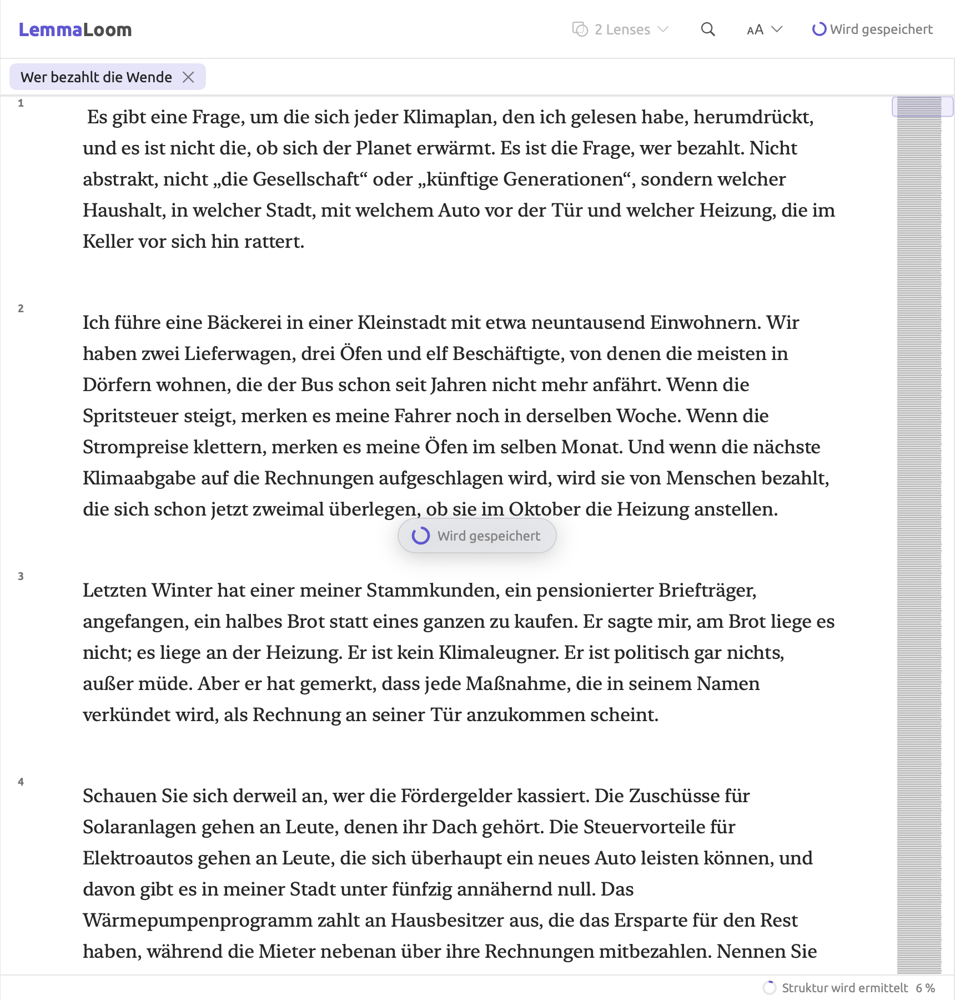
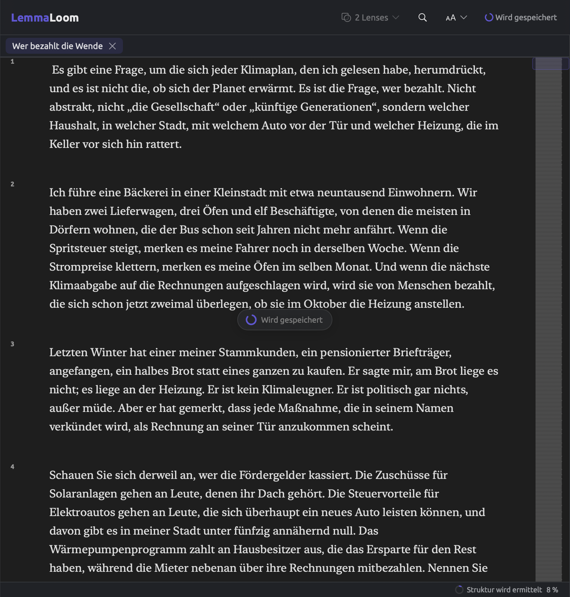
Die Indizierung eines geänderten Dokuments dauert etwa so lange wie seine erste Indizierung. Den Fortschritt verfolgen Sie in der Statusleiste oder über den Menübefehl Fenster ▸ Aktivität (⌥⌘0). Ist die Indizierung für ein Dokument ausgeschaltet, indiziert LemmaLoom es erst neu, wenn Sie in der Statusleiste auf Jetzt indizieren klicken; bis dahin zeigt die Leseansicht weiter Wird gespeichert.
Wie Annotationen Änderungen folgen
Wenn Sie Änderungen an einem Dokument sichern, vergleicht LemmaLoom den bisherigen und den neuen Text Buchstabe für Buchstabe, um festzustellen, was hinzugefügt und was gelöscht wurde. Dann verschiebt es alles, was mit dem Text verbunden ist, an die neuen Positionen, nämlich Kodierungen, Memos zu einer Textstelle, Lesezeichen, Verknüpfungen, die Verbindungen zwischen Transkript und Audio oder Video (siehe Ein Transkript korrigieren weiter unten in diesem Kapitel) und die Zuordnung zwischen Original und Übersetzung. Gemeinsam scrollen und die Platzierung neuer Kopien von Annotationen beruhen auf dieser Zuordnung (siehe Annotationen in beiden Sprachen in Kapitel 9, Übersetzungen und geteilte Ansicht).
Eine Änderung gilt nur für die Sprachfassung, in der Sie sie vornehmen, also für das Original oder für die Übersetzung; die Annotationen in der anderen Sprachfassung bleiben unverändert. Wenn Sie schon wissen, dass Sie ein Dokument übersetzen möchten, korrigieren Sie seine Fehler am besten vorher, damit sie nicht in die andere Sprache übernommen werden.
Text, den Sie weiter vorn im Dokument hinzufügen oder löschen, verschiebt die Textstelle mitsamt ihrem Text. Text, den Sie innerhalb einer Textstelle hinzufügen, wird Teil von ihr. Text, den Sie direkt hinter einer Textstelle hinzufügen, bleibt außerhalb (es sei denn, er endet mit demselben Zeichen wie die Textstelle selbst; dann wird er Teil von ihr). Löschungen innerhalb einer Textstelle verkürzen sie. Text, den Sie direkt vor einer Textstelle hinzufügen, bleibt außerhalb. Text, der eine Textstelle ersetzt, wird zur neuen Textstelle. Löschen Sie den gesamten Text einer Textstelle, bleibt die Annotation mit einer leeren Textstelle erhalten.
Ein Beispiel
Die Rede „Das Versprechen der Bürgermeisterin“ enthält diese Textstelle:
Wir werden zwölftausend Bäume pflanzen, zuerst in den Vierteln, die sie am dringendsten brauchen.
Angenommen, zwölftausend Bäume ist mit „Hoffnung“ kodiert. Die Tabelle zeigt, was aus der kodierten Textstelle wird, wenn Sie jede dieser Änderungen einzeln am ursprünglichen Satz vornehmen:
| Änderung | Kodierte Textstelle danach |
|---|---|
| Wir werden geändert in Die Stadt wird | zwölftausend Bäume, mit ihrem Text verschoben |
| zwölftausend geändert in 12.000 | 12.000 Bäume |
| neue eingefügt zwischen zwölftausend und Bäume | zwölftausend neue Bäume |
| rund eingefügt vor zwölftausend | zwölftausend Bäume; rund bleibt außerhalb |
| bis 2035 eingefügt hinter Bäume | zwölftausend Bäume; der Zusatz bleibt außerhalb |
| für mehr Kühle eingefügt hinter Bäume | zwölftausend Bäume für mehr Kühle |
| zwölftausend Bäume ersetzt durch eine grüne Allee | eine grüne Allee |
| zwölftausend Bäume gelöscht | eine leere Textstelle |
Da der Zusatz bis 2035 auf 5 endet, Bäume aber auf e, setzt LemmaLoom den Zusatz hinter die Textstelle. Der Zusatz für mehr Kühle endet dagegen wie Bäume auf e, deshalb behandelt LemmaLoom ihn als Einfügung innerhalb der Textstelle; der neue Text könnte ebenso gut aus den Buchstaben e für mehr Kühl bestehen, eingefügt innerhalb der Textstelle vor ihrem letzten Buchstaben.
Löschen Sie den Text einer Kodierung wie in der letzten Zeile, finden Sie diese Kodierung nur noch in der Detailansicht Kodierungen des Projektregals. Dort können Sie sie mit der rechten Maustaste anklicken und Kodierung löschen wählen. Memos und Lesezeichen, deren Text Sie löschen, bleiben auf dieselbe Weise erhalten. Um leere Annotationen zu vermeiden, entfernen Sie sie, bevor Sie ihren Text löschen.
Wenn Sie in der Nähe einer Kodierung etwas geändert haben, prüfen Sie in der Leseansicht, ob die Kodierung noch den richtigen Teil der geänderten Textstelle umfasst. Muss sie angepasst werden, entfernen Sie die Kodierung von der Textstelle und kodieren diese neu (siehe Einen Code von einer Textstelle entfernen in Kapitel 7, Kodieren).
Eine Änderung widerrufen
Das Sichern einer Änderung erzeugt einen Eintrag im Widerrufverlauf (siehe Kapitel 23, Widerrufen und Wiederholen). Um den vorherigen Stand des bearbeiteten Textes wiederherzustellen und alle Kodierungen, Memos, Lesezeichen und Verknüpfungen an ihre früheren Positionen zurückzusetzen, wählen Sie Bearbeiten ▸ Text bearbeiten widerrufen (⌘Z). Das Dokument wird dann entsprechend neu indiziert.
Audio- und Videodokumente
Bei einem Audio- oder Videodokument wie der „Radiodebatte“ arbeiten Sie mit dem Transkript genauso wie mit jedem Textdokument. Wenn Sie die Aufnahme importieren, erstellt LemmaLoom das Transkript für Sie (siehe Kapitel 4, Material importieren). Jeder Abschnitt des Transkripts ist mit dem Abschnitt der Aufnahme verbunden, aus dem er stammt. Ein neuer Absatz beginnt dort, wo der Sprecher wechselt oder eine Sprechpause länger als etwa anderthalb Sekunden dauert.
Die Aufnahme kodieren Sie über ihr Transkript. Wenn sich die Bedeutung einer Passage aus dem Transkript allein nicht erschließt, etwa weil erst die Betonung oder der Sarkasmus des Sprechers ihr Sinn gibt, können Sie sie sich direkt anhören.
Sprecher und Text werden in LemmaLoom getrennt geführt. Enthält eine Aufnahme mehrere Sprecher, zeigt die Wiedergabeleiste beim Zuhören an, wer gerade spricht. Bei Aufnahmen, die LemmaLoom transkribiert hat, heißen die Sprecher „Sprecher 1“, „Sprecher 2“ und so weiter; in der „Radiodebatte“ heißen sie „Moderation“, „Aktivistin“ und „Skeptiker“. Die Redebeiträge jedes Sprechers werden automatisch mit einem Untercode des Codes „Sprecher“ kodiert. Wenn Sie Ihre Sprechercodes umbenennen, behält die Wiedergabeleiste die ursprünglichen Namen (siehe Sprecher in Kapitel 4, Material importieren).
Die Wiedergabeleiste
Über dem Text liegt die Wiedergabeleiste. Von links nach rechts enthält sie:
- nur bei Videos Schaltflächen, mit denen Sie den Videoplayer auf die Steuerung reduzieren (Auf die Steuerung reduzieren) oder wieder einblenden (Video einblenden) und das Video neben den Text oder wieder darüber setzen;
- die Schaltfläche Wiedergabe oder Pausieren;
- die Schaltfläche Mit dem Audio scrollen, mit der die Leseansicht der Aufnahme folgt;
- die abgelaufene Zeit, einen Regler für die Wiedergabeposition und die Gesamtlänge der Aufnahme;
- bei Aufnahmen mit mehreren Sprechern den Sprecher der aktuellen Passage, etwa „Skeptiker“.
Abgelaufene Zeit und Gesamtlänge erscheinen in Minuten und Sekunden, etwa 2:14. Bei Aufnahmen ab einer Stunde Länge kommen die Stunden hinzu, etwa 3:56:32.
Die Abbildung unten zeigt die Aufnahme „Radiodebatte“. Sie ist gut fünfeinhalb Minuten lang und gerade bei 1:22 angehalten, während der Skeptiker spricht. Da Mit dem Audio scrollen eingeschaltet ist, ist die aktuelle Passage hervorgehoben und der übrige Text abgeblendet. Die Sprechercodes stehen in der Randspalte neben jedem Redebeitrag.
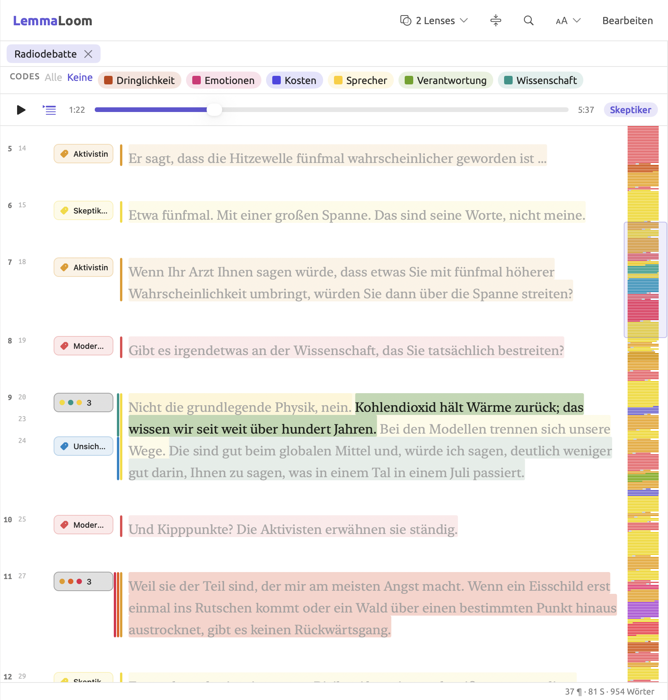
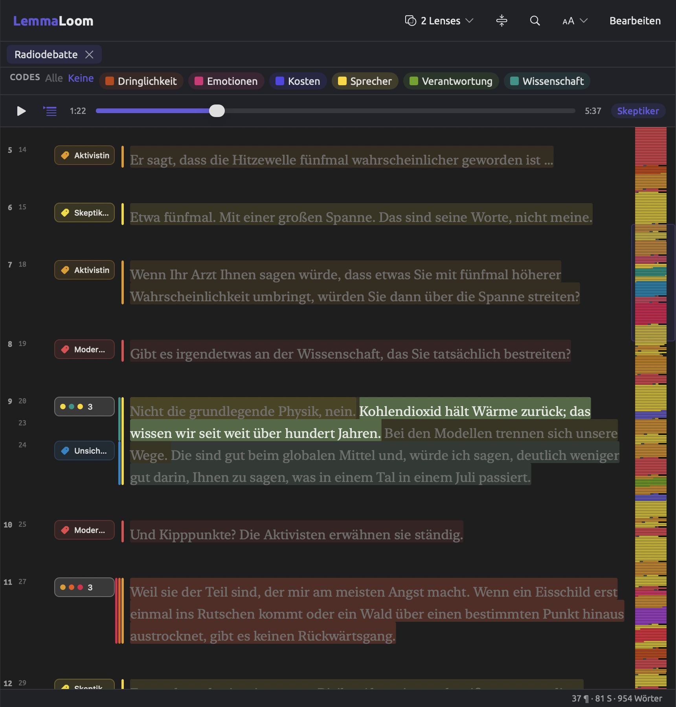
So spielen Sie eine Aufnahme ab:
- Öffnen Sie das Dokument.
- Klicken Sie auf Wiedergabe (das Dreieck) oder wählen Sie Dokument ▸ Wiedergabe (⇧⌘P).
- Zum Anhalten klicken Sie auf Pausieren oder wählen Dokument ▸ Pausieren (⇧⌘P).
- Um an eine andere Stelle zu springen, ziehen Sie den Regler.
Klicken Sie am Ende einer Aufnahme auf Wiedergabe, beginnt die Wiedergabe wieder von vorn. Wechseln Sie während der Wiedergabe den Tab oder schließen das Dokument, wird die Wiedergabe sofort angehalten.
Ab einer Stelle im Transkript abspielen
Ein Klick auf ein Wort im Transkript setzt die Wiedergabe an den Anfang der Passage, zu der das Wort gehört. Der Klick verschiebt nur die Wiedergabeposition; klicken Sie auf Wiedergabe, um ab dieser Stelle zuzuhören. Das Springen per Klick auf ein Wort funktioniert nur in einem indizierten Dokument (siehe Bevor die Indizierung abgeschlossen ist weiter oben in diesem Kapitel). Ist ein Dokument in einer Sprache ohne Grammatikanalyse verfasst, verwenden Sie stattdessen den Regler.
Um eine unklare Passage zu prüfen, klicken Sie auf ein Wort darin und drücken ⇧⌘P. Die Wiedergabe beginnt, und ein erneutes ⇧⌘P hält sie wieder an.
Dem Transkript folgen
Ist Mit dem Audio scrollen eingeschaltet (die Schaltfläche ist hervorgehoben), hebt die Leseansicht die gerade abgespielte Passage hervor und hält sie in der Mitte des Bereichs, während die Aufnahme weiterläuft. Wenn Sie den Regler ziehen, wandert die hervorgehobene Passage mit. Beim Einschalten springt Mit dem Audio scrollen sofort an die Stelle, die gerade abgespielt wird. Anfangs ist Mit dem Audio scrollen ausgeschaltet; wie Größe und Position von Videos gilt es für jedes Audio- und Videodokument.
Wenn Sie während der Wiedergabe scrollen, klicken oder sich mit der Tastatur bewegen, hört die Leseansicht für einige Sekunden auf zu folgen und scrollt zurück, sobald die nächste Passage der Aufnahme beginnt. Ist eine Textstelle ausgewählt, bleibt die Leseansicht an ihrer Position. Ein Klick auf Wiedergabe springt sofort zurück zur gerade abgespielten Passage.
Mit dem Audio scrollen hilft besonders, wenn Sie eine Aufnahme beim Zuhören kodieren oder Transkripte mit der Aufnahme abgleichen. Halten Sie die Wiedergabe mit ⇧⌘P an, wenn Sie auf eine Passage stoßen, die Sie kodieren möchten; die Leseansicht bleibt dann bei dieser Passage, während Sie sie auswählen und kodieren.
Im Bereich Leseansicht der Einstellungen legt Audiowiedergabe fest, wie die gerade abgespielte Passage dargestellt wird. Spotlight dämpft alles außer der abgespielten Passage. Volle Fläche setzt die abgespielte Passage auf eine farbige Fläche. Hervorheben schließlich hebt die abgespielte Passage leicht hervor.
Video über oder neben dem Text
Ein Video läuft in einem Rahmen über dem Textbereich. Um dem Textbereich mehr Platz zu geben, ziehen Sie die Trennlinie unter dem Video nach oben. Sie können auch auf Auf die Steuerung reduzieren klicken; dann wird das Video eingeklappt, und nur die Wiedergabeleiste bleibt.
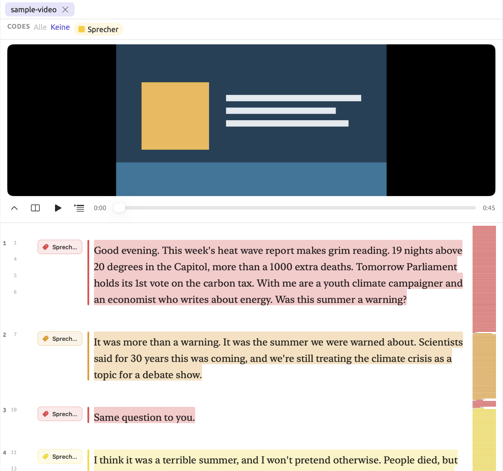
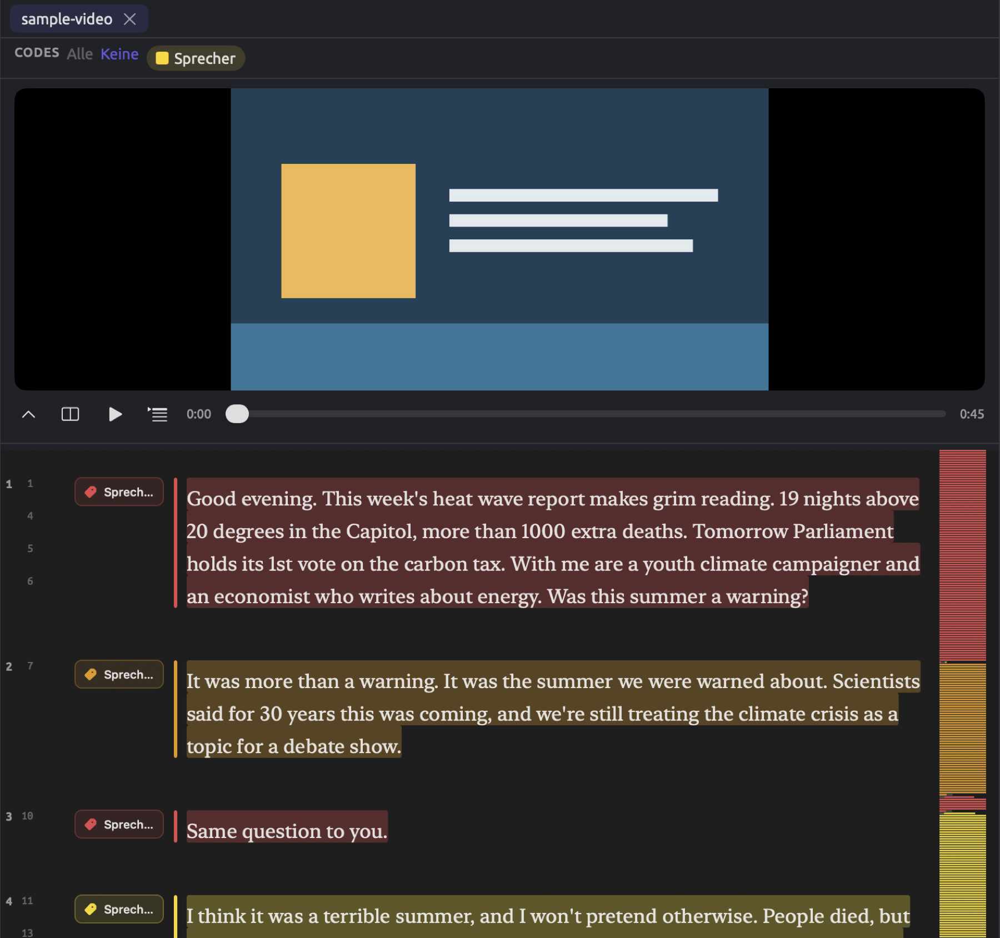
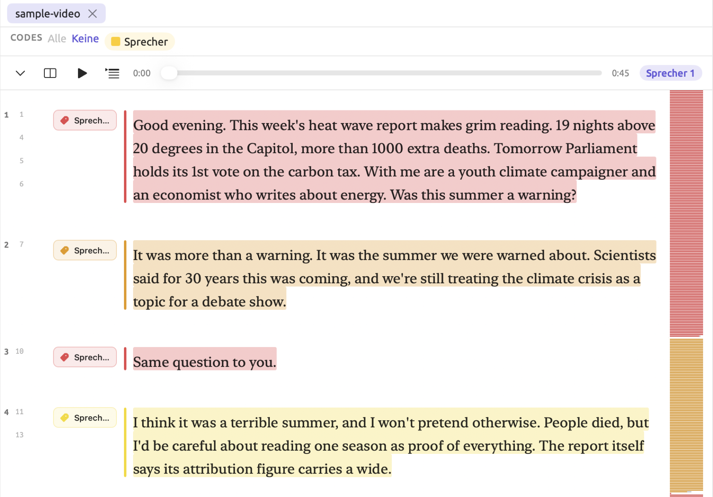
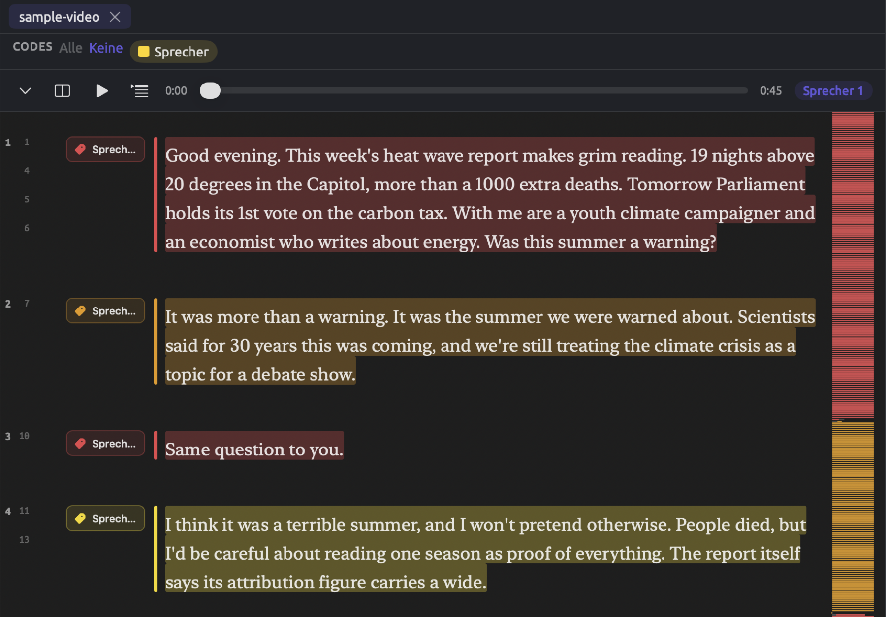
Ein Klick auf die Schaltfläche Video neben dem Text anzeigen setzt das Video links neben den Textbereich, mit der Wiedergabeleiste unter dem Video. Wenn Sie die Trennlinie dazwischen verschieben, ändern sich die Größen beider Bereiche entsprechend, wobei der Text eine lesbare Breite behält. Mit der Schaltfläche Video über dem Text anzeigen stellen Sie die ursprüngliche Anordnung wieder her. Auf breiteren Bildschirmen sehen Sie mit dem Video neben dem Text mehr Zeilen des Transkripts.
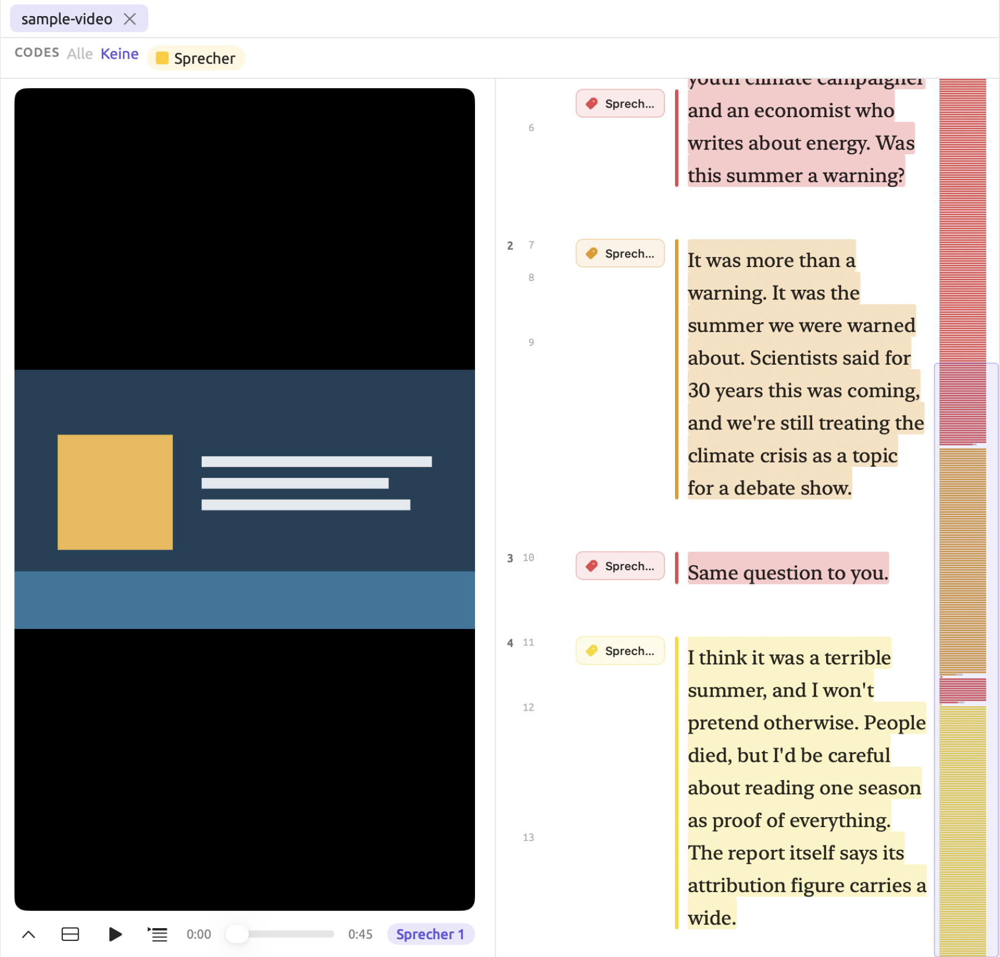
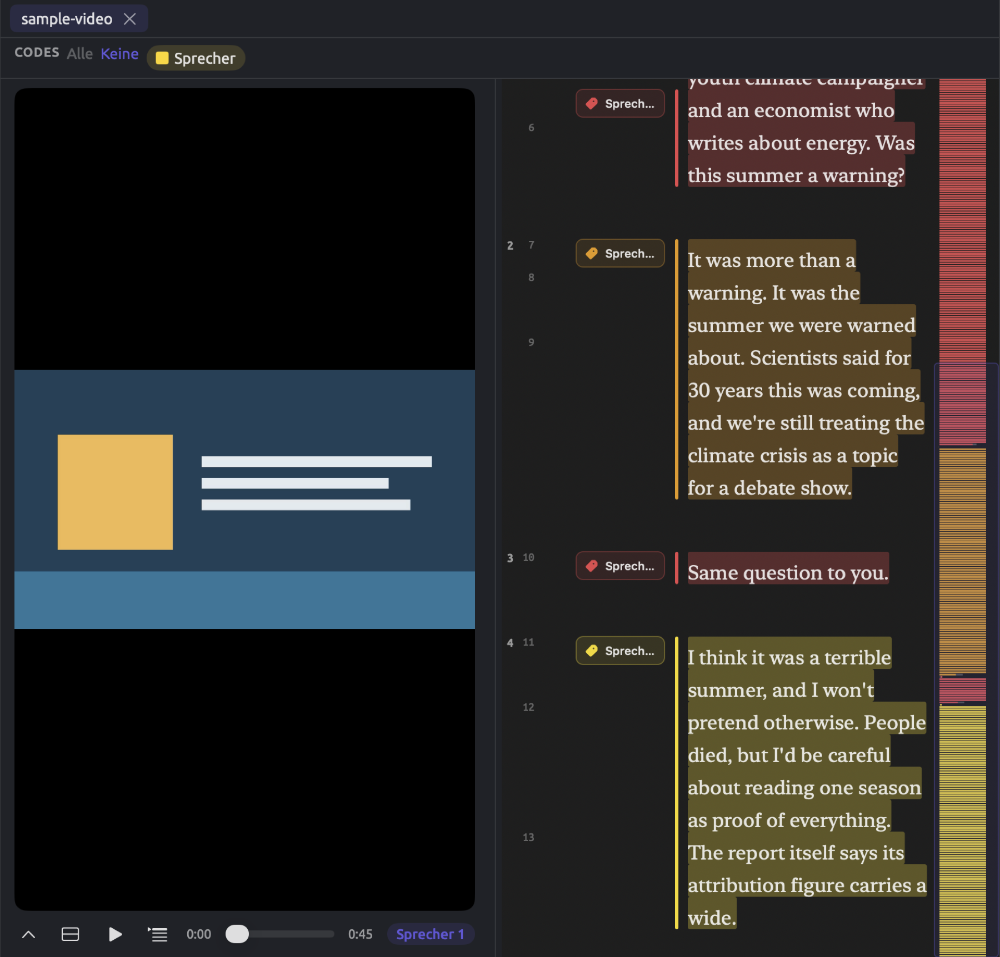
Ein Transkript korrigieren
Transkripte enthalten zwangsläufig einige Fehler, vor allem bei Namen und Fachbegriffen. Ein Transkript korrigieren Sie wie jeden anderen Text (siehe Bearbeiten und sichern weiter oben in diesem Kapitel). Die Wiedergabeleiste bleibt während der Bearbeitung an ihrem Platz, und Sie können die Wiedergabe auch beim Bearbeiten des Transkripts mit ⇧⌘P starten und anhalten.
Am sinnvollsten ist es, zuerst die Fehler im Transkript zu finden und sie danach zu beheben. Spielen Sie die Aufnahme in der Leseansicht mit eingeschaltetem Mit dem Audio scrollen ab, um die Passagen zu finden, die eine Korrektur brauchen (Lesezeichen eignen sich, um sie festzuhalten). Anschließend beheben Sie die Fehler im Editor. Am besten korrigieren Sie das Transkript vor dem Kodieren.
Die Verbindungen zwischen dem Transkript und der Aufnahme folgen Ihren Änderungen auf dieselbe Weise wie Kodierungen (siehe Wie Annotationen Änderungen folgen weiter oben in diesem Kapitel). Ein korrigiertes Wort innerhalb einer Passage wird also weiterhin als Teil dieser Passage abgespielt, und ein Klick darauf führt an dieselbe Stelle der Aufnahme wie vor Ihrer Änderung.
Die Leseansicht im Vollbildmodus
Im Vollbildmodus nimmt das Fenster von LemmaLoom den ganzen Bildschirm ein. Die Titelleiste wird ausgeblendet, und ihre Werkzeuge wandern in die Symbolleiste ganz oben am Bildschirm. Der Vollbildmodus ist besonders für die erste Lektüre umfangreicher Dokumente hilfreich. Beim Kodieren können Sie den Inspektor geöffnet lassen, etwa um die Codes des Dokuments in seinem Tab Kodierung im Blick zu behalten.
Die Abbildung unten zeigt „Uns läuft die Zeit davon“ im Vollbildmodus; Seitenleiste und Inspektor sind noch geöffnet, und in der Symbolleiste ist das Menü Leseansicht-Einstellungen aufgeklappt.
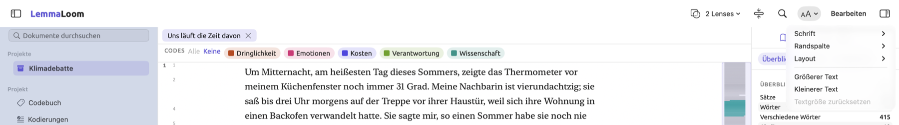
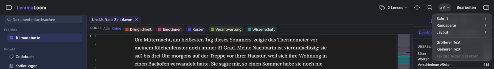
So lesen Sie im Vollbildmodus:
- Öffnen Sie das Dokument.
- Wählen Sie Darstellung ▸ Vollbildmodus (⌃⌘F) oder klicken Sie auf den grünen Knopf oben links im Fenster.
- Um dem Text die ganze Bildschirmbreite zu geben, blenden Sie die Seitenleiste mit Darstellung ▸ Seitenleiste ein-/ausblenden (⌃⌘S) und den Inspektor mit Darstellung ▸ Inspektor ein-/ausblenden (⌃⌘I) aus.
- Um den Vollbildmodus zu verlassen, wählen Sie Darstellung ▸ Vollbildmodus aus (⌃⌘F).
Alle Menübefehle und Kurzbefehle aus diesem Kapitel funktionieren im Vollbildmodus genauso.
Zwei Dokumente nebeneinander lesen
Die geteilte Ansicht teilt die Leseansicht in zwei Bereiche, die jeweils ein Dokument zeigen. So können Sie zwei Dokumente einander gegenüberstellen, etwa einen Meinungsbeitrag von Aktivisten zu einem Thema und einen von Skeptikern zum selben Thema, oder einen Artikel und seine Übersetzung. Auch mitten im Kodieren ist die geteilte Ansicht hilfreich. Steht in einem Bereich ein Dokument, das Sie bereits kodiert haben, sehen Sie genau, wie Sie dort kodiert haben, und können den Code im Dokument, an dem Sie gerade arbeiten, einheitlich weiter anwenden. Mehr dazu, wie Sie Übersetzungen in der geteilten Ansicht verwenden, finden Sie in Kapitel 9, Übersetzungen und geteilte Ansicht.
Die Abbildung zeigt links den Meinungsbeitrag „Uns läuft die Zeit davon“ und rechts seine englische Übersetzung „Uns läuft die Zeit davon (Englisch)“. Die Übersetzung enthält Kopien der Kodierungen des Originals, und Gemeinsam scrollen hält beim Scrollen beide auf gleicher Höhe.
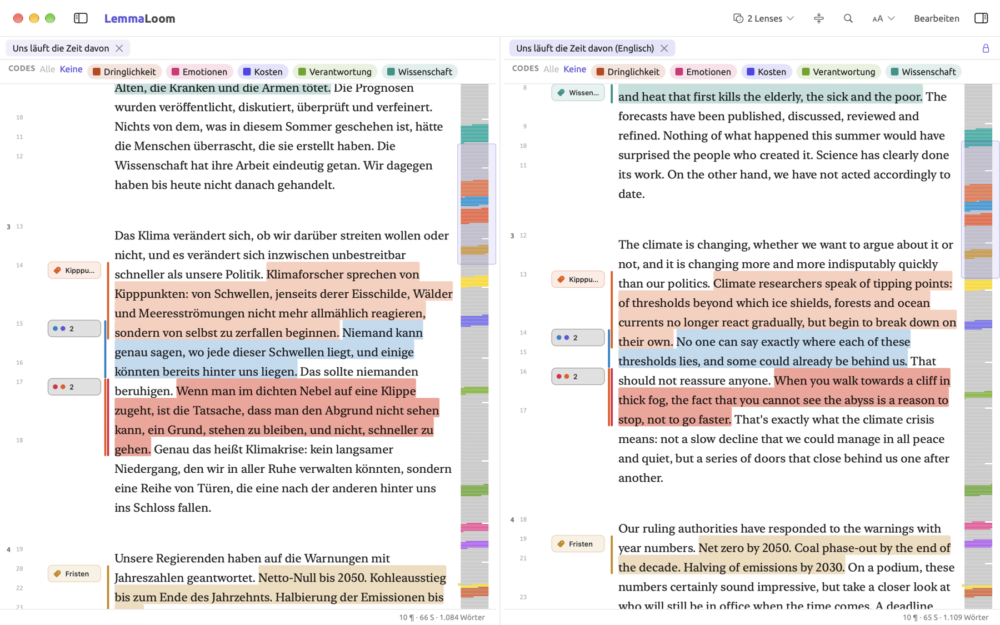
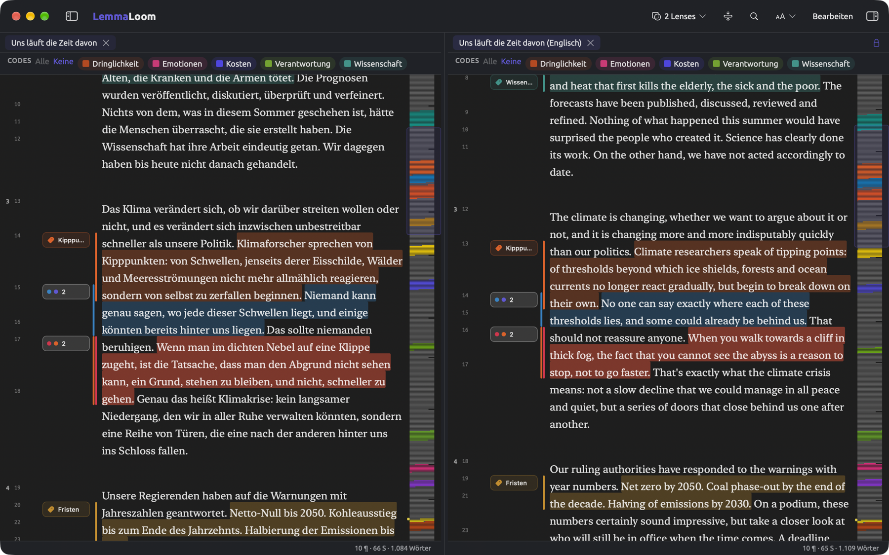
Es gibt mehrere Wege, ein zweites Dokument neben dem aktuellen zu öffnen.
- Klicken Sie in der Seitenleiste mit der rechten Maustaste auf das Dokument und wählen Sie im Kontextmenü In geteilter Ansicht öffnen.
- Oder klicken Sie mit der rechten Maustaste auf den Tab eines anderen geöffneten Dokuments und wählen Sie in dessen Menü In geteilter Ansicht öffnen.
- Um zwei Dokumente gleichzeitig nebeneinander zu öffnen, klicken Sie in der Seitenleiste bei gedrückter Taste ⌘ auf das zweite Dokument, klicken mit der rechten Maustaste auf eines der beiden und wählen im Kontextmenü Nebeneinander öffnen. Das Dokument, das in der Seitenleiste weiter oben steht, öffnet sich links.
- Bei einer Übersetzung klicken Sie in der Seitenleiste mit der rechten Maustaste darauf und wählen Neben dem Original öffnen. Das Original öffnet sich links, die Übersetzung rechts.
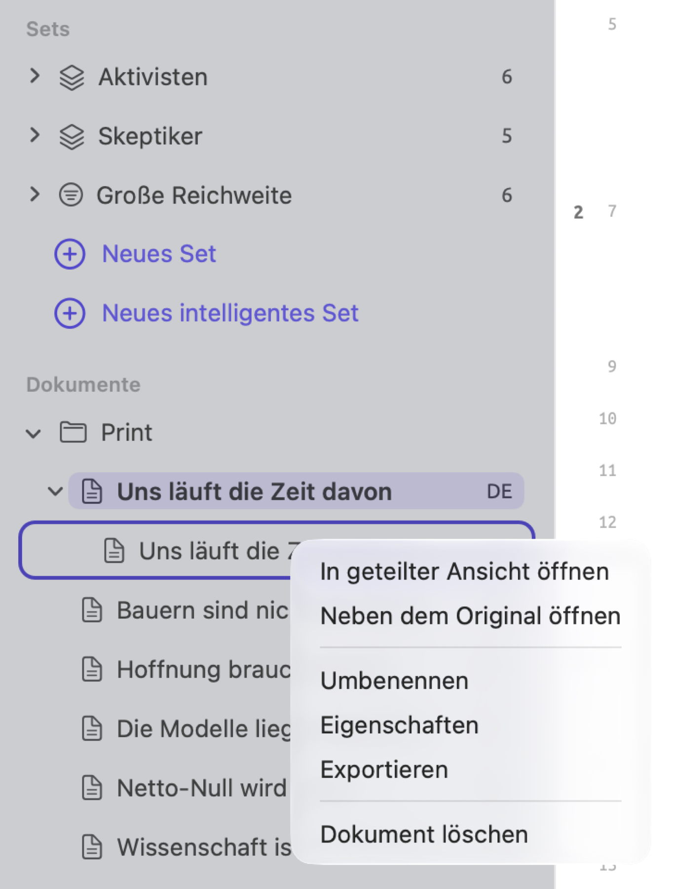
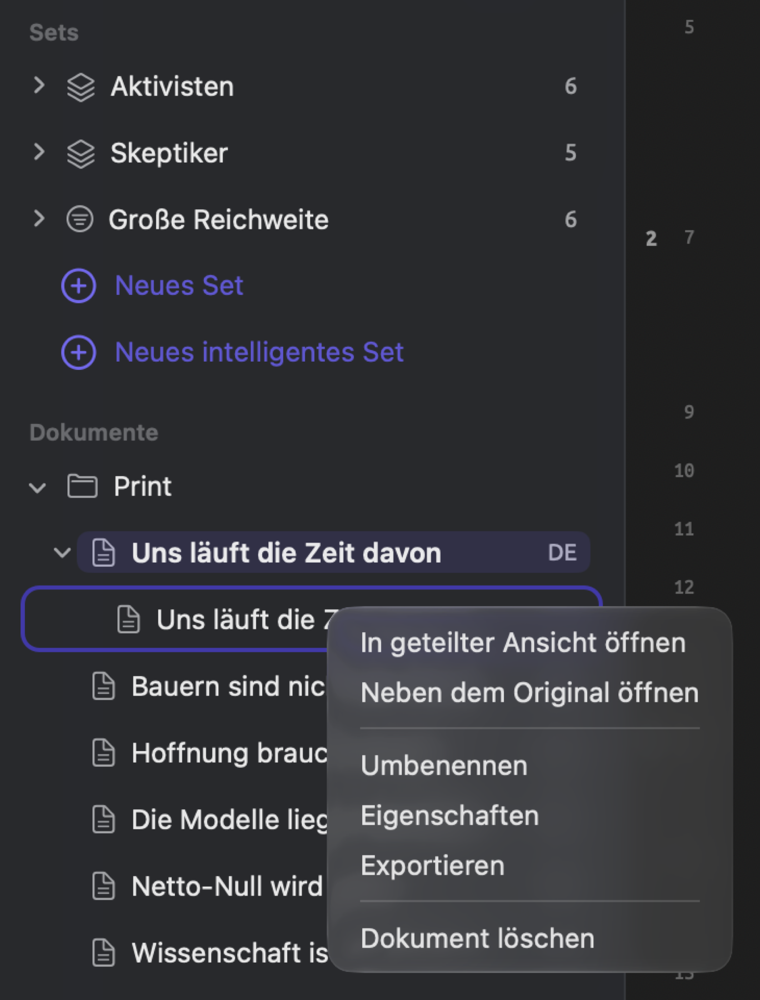
Alle genannten Befehle finden Sie auch im Menü Fenster der Menüleiste. Dort listet In geteilter Ansicht öffnen die geöffneten Dokumente auf, die neben dem aktiven Dokument erscheinen können.
Das neu geöffnete Dokument erscheint im rechten Bereich. Sein Tab wandert aus der Tableiste in die Kopfzeile des rechten Bereichs.
So funktioniert die geteilte Ansicht.
- Ein Klick in einen der Bereiche macht ihn zum aktiven Bereich und hebt seinen Tab hervor. Werkzeuge, Menüs und Inspektor beziehen sich dann nur auf den aktiven Bereich; ⌘F durchsucht also nur das Dokument in diesem Bereich.
- Wenn Sie die Trennlinie zwischen den beiden Bereichen ziehen, ändern Sie ihre Größe. Jeder Bereich hat eine Mindestgröße, und LemmaLoom merkt sich die Aufteilung und stellt sie wieder her, wenn Sie die geteilte Ansicht erneut öffnen.
- Jeder Bereich hat eigene Lenses und eine eigene Suchleiste sowie eine eigene Auswahl und Scrollposition. So können Sie zum Beispiel in einem Bereich eine Grammatik-Lens aktivieren und im anderen nur Ihre Codes anzeigen. Schrift, Textgröße, Randspalte und Layout sind in beiden Bereichen gleich.
- Gehören die beiden Dokumente als Original und Übersetzung zusammen oder sind sie zwei Übersetzungen desselben Originals, erscheint ganz rechts in der Kopfzeile des rechten Bereichs eine Schaltfläche mit einem Schloss, Gemeinsam scrollen. Klicken Sie darauf, um das Scrollen zu koppeln, oder wählen Sie Darstellung ▸ Gemeinsam scrollen (⌥⌘L).
Um die geteilte Ansicht zu schließen, klicken Sie auf das × in der Kopfzeile des rechten Bereichs, wählen im Kontextmenü dieser Kopfzeile Geteilte Ansicht schließen oder wählen in der Menüleiste Fenster ▸ Geteilte Ansicht schließen. Das Dokument im rechten Bereich wird dabei ebenfalls geschlossen.
Ein Dokument in einem eigenen Fenster öffnen
Sie können ein Dokument auch in einem eigenen Fenster lesen. Das ist nützlich, wenn Sie einen zweiten Bildschirm haben oder einen Text im Blick behalten möchten, während das Hauptfenster etwas anderes zeigt, etwa das Codebuch oder eine Abfrage. Um ein Dokument in einem eigenen Fenster zu öffnen, klicken Sie mit der rechten Maustaste auf seinen Tab und wählen In neuem Fenster öffnen. Für das aktive Dokument können Sie auch Fenster ▸ In neuem Fenster öffnen wählen. Das Fenster Dokument zeigt die Leseansicht mit einem eigenen Inspektor. LemmaLoom hat nur ein solches Fenster; wenn Sie ein weiteres Dokument in einem neuen Fenster öffnen, ersetzt es deshalb das bisher angezeigte.
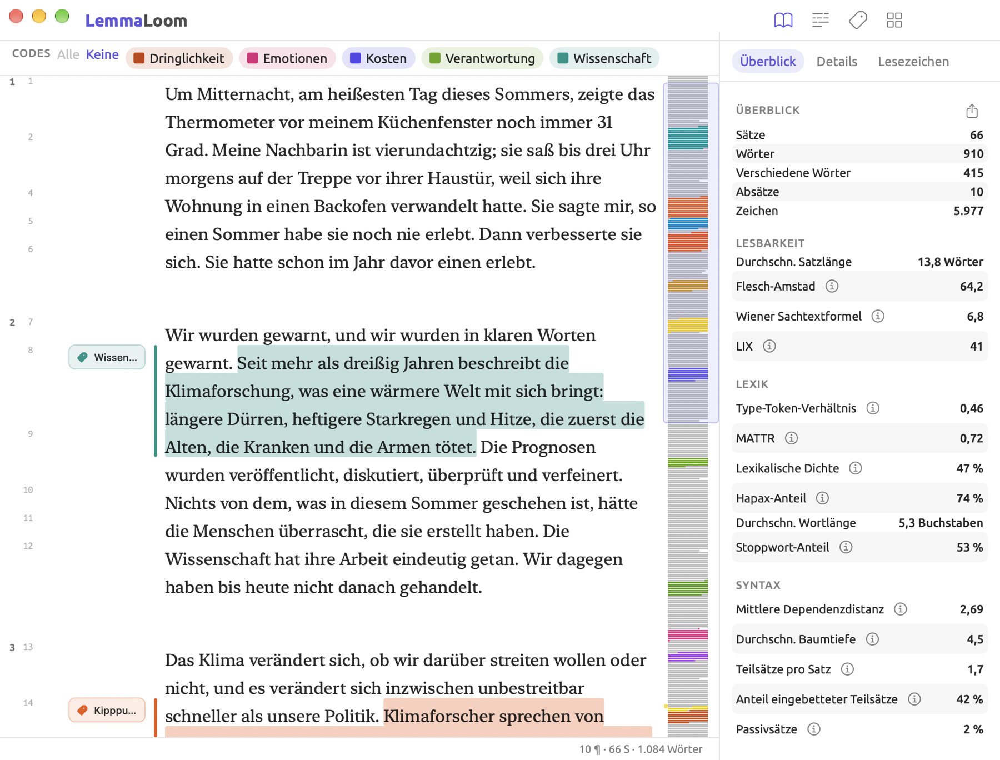
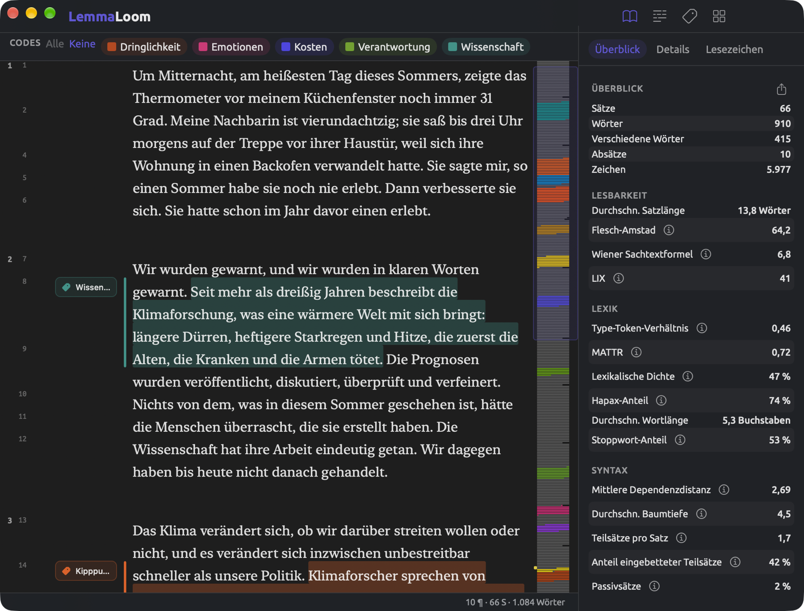
Dort stehen Ihnen die Menübefehle und ihre Kurzbefehle zur Verfügung, zum Beispiel ⌘F zum Suchen, ⌘+ und ⌘- für die Textgröße, ⇧⌘E zum Bearbeiten, ⌃⌘I zum Ein- und Ausblenden des Inspektors, ⌘↩ zum Abschließen einer Bearbeitung und ⌘. zum Abbrechen.
Befehle zum Lesen und Bearbeiten
| Befehl | Kurzbefehl | Hinweise |
|---|---|---|
| Bearbeiten ▸ Suchen | ⌘F | Öffnet oder schließt die Suchleiste. Während der Bearbeitung deaktiviert. |
| Bearbeiten ▸ Weitersuchen | ⌘G | Wenn die Suchleiste Treffer hat. |
| Bearbeiten ▸ Rückwärts suchen | ⇧⌘G | Wenn die Suchleiste Treffer hat. |
| Darstellung ▸ Größerer Text | ⌘+ | Bei geöffnetem Dokument, bis 200 Prozent. |
| Darstellung ▸ Kleinerer Text | ⌘- | Bei geöffnetem Dokument, bis hinunter zu 70 Prozent. |
| Darstellung ▸ Textgröße zurücksetzen | ⌘0 | Bei geöffnetem Dokument, wenn die Größe von 100 Prozent abweicht. |
| Darstellung ▸ Gemeinsam scrollen | ⌥⌘L | In der geteilten Ansicht, mit zwei Sprachfassungen eines Dokuments. |
| Darstellung ▸ Seitenleiste ein-/ausblenden | ⌃⌘S | Blendet die Seitenleiste ein oder aus. |
| Darstellung ▸ Inspektor ein-/ausblenden | ⌃⌘I | Blendet den Inspektor ein oder aus. |
| Darstellung ▸ Vollbildmodus | ⌃⌘F | Heißt im Vollbildmodus Vollbildmodus aus. |
| Dokument ▸ Bearbeiten | ⇧⌘E | Sobald der Text des Dokuments geladen ist. |
| Dokument ▸ Sichern | ⌘↩ | Während der Bearbeitung. |
| Dokument ▸ Abbrechen | ⌘. | Während der Bearbeitung. |
| Dokument ▸ Wiedergabe oder Pausieren | ⇧⌘P | In Audio- und Videodokumenten. |
| Bearbeiten ▸ Text bearbeiten widerrufen | ⌘Z | Nach dem Sichern einer Änderung. |
Eine Liste aller Kurzbefehle von LemmaLoom finden Sie in Kapitel 25, Tastaturkurzbefehle.